Highlighted author(s): Antoine Browaeys
Authors: Pauline Mathiot, Elio Garnaoui, Axel-Ugo Leriche, Evan Philip, Boris Albrecht, Clémence Briosne-Fréjaville, Lorenzo Cardarelli, Antoine Cornillot, Gwennolé Cournez, Luc Couturier, Julius De Hond, Rebecca El Koussaifi, Thomas Eritzpokoff, Florian Fasola, Antonio Andrea Gentile, Casper Gyurik, Clotilde Hamot, Loïc Henriet, Gaétan Hercé, Michael Kaicher, Lucas Lassablière, François-Marie Le Régent, Edgar Leroux, Yohann Machu, Hadriel Mamann, Luis Ortiz, Annie Paine, Thomas Pansiot, Arnaud Peloquin, Francisco Ponciano, Julien Ripoll, Raja Selvarajan, Adrien Signoles, Henrique Silvério, Siddhy Tan, Marie Taouzinet, Selim Touati, Louis Vignoli, Antoine Browaeys, Pascal Scholl
Type: both · Category: quantum information and computing · PDF: https://arxiv.org/pdf/2605.21276v1
Analysis basis: full PDF text, analyzed in chunks
Topic relevance: 🔥 QC/QI experiment 5/5 · 🔥 Rydberg arrays 4/5
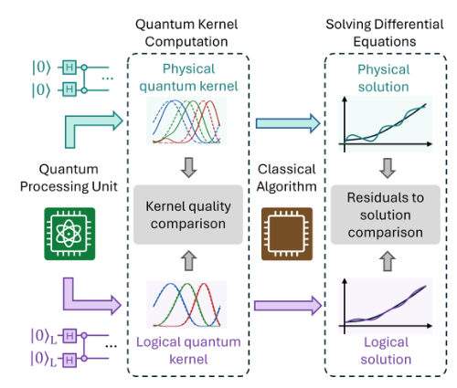
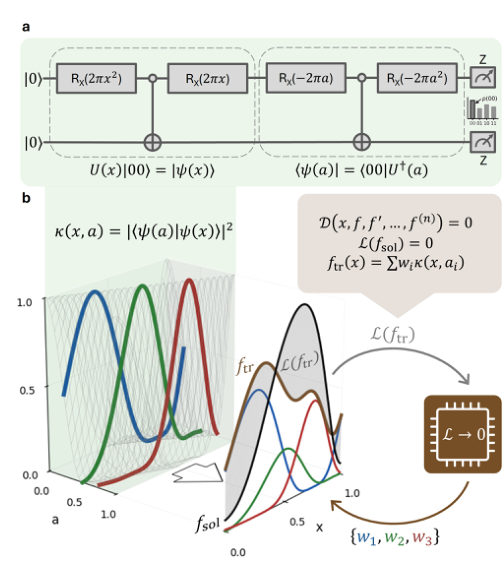
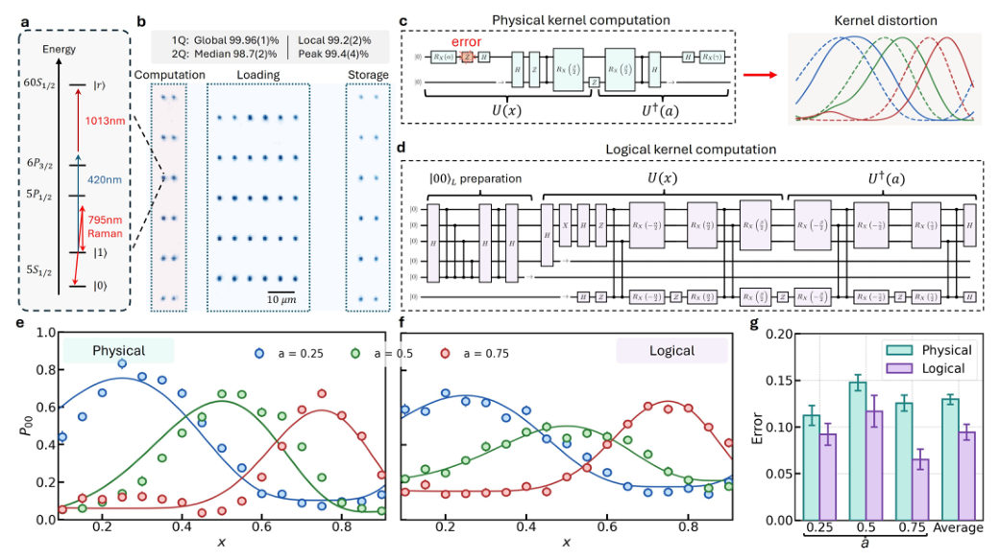
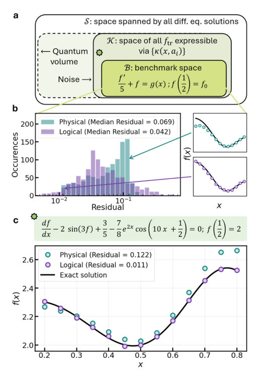
Summary. This paper demonstrates that a logical quantum processor can solve differential equations more accurately than a physical processor by using error detection to suppress kernel distortions. By implementing a [[4, 2, 2]] code on a neutral-atom platform, the researchers showed a significant reduction in the error of the final application-level solution. This highlights the importance of fault-tolerant architectures for practical quantum machine learning tasks.
Why it may be interesting. It demonstrates a practical application of error detection in a neutral-atom platform, showing how logical encoding can specifically target and suppress coherent errors that degrade algorithmic performance in quantum machine learning.
Main problem. Benchmarking the performance of a machine-learning differential equation solver on a neutral-atom logical processor to determine if logical qubits can mitigate kernel distortions caused by hardware noise.
Main result. The logical implementation using a [[4, 2, 2]] error-detecting code systematically outperforms the physical implementation, significantly reducing kernel shape distortion and achieving much higher accuracy in solving non-linear differential equations.
Method. A hybrid quantum-classical workflow using quantum kernel methods and mixed-model regression to solve differential equations, compared across physical and logical qubit encodings.
Model / system. A neutral-atom quantum processor based on Rubidium-87 atoms in an optical tweezer array, utilizing Rydberg blockade for two-qubit gates and a zoning architecture for atom transport.
Key observables. Quantum kernel quality (probability p00), kernel distortion (shape and amplitude alterations), and the residual (NRMSE) of the differential equation solution.
Important parameters / regimes. Coherence times (T1 approx 5s, T2 approx 1.49s), gate fidelities (single-qubit approx 99.96%, CZ approx 98.7%), and the [[4, 2, 2]] error-detecting code.
Assumptions / limitations. The benchmark differential equations are chosen such that their solutions are expressible within the kernel's feature space; error models assume errors can be decomposed into Pauli and atom loss channels.
Figures summary. Figure 1 shows the end-to-end benchmark workflow; Figure 2 details the quantum kernel circuit and regression process; Figure 3 illustrates the atomic hardware, imaging, and error-corrected circuits; Figure 4 compares the distribution of residuals for linear and non-linear DEs; Supplementary figures detail error models, hardware stability, and proxy-phasing.
Paper structure. The paper introduces the benchmarking goal, describes the hardware platform and error-correcting encoding, details the machine-learning algorithm for solving DEs, presents the comparative results between physical and logical kernels, and concludes with an error analysis and discussion of future scaling.
We report on a performance comparison between physical and logical computations on a prototypical machine-learning application: solving differential equations using quantum kernel methods. The algorithm is implemented on an atom-based logical quantum processor, both at the physical and logical levels. We show that the kernel estimated from the logical implementation performs better than its physical counterpart on relevant metrics. We observe how such performance improvement can be traced back to specific noise-induced errors detected by the chosen encoding. We apply the computed quantum kernel to the task of solving differential equations, confirming how the superior performance of a logical quantum kernel is retained also at an end-to-end applicative level. Our findings show that experimental validation of end-to-end protocols can already highlight the positive impact of fault-tolerant implementations despite their higher quantum resource count, and guide application-informed architectural choices.
Authors: Cameron Jones, Jonathan Y. Huang, Santiago Serrano, MengKe Feng, Gerardo A. Paz-Silva, Tuomo Tanttu, Paul Steinacker, Fay E. Hudson, Wee Han Lim, Nikolay V. Abrosimov, Hans-Joachim Pohl, Michael L. W. Thewalt, Andrew S. Dzurak, Andre Saraiva, Arne Laucht, Chih Hwan Yang
Type: experiment · Category: quantum information and computing · PDF: https://arxiv.org/pdf/2605.20781v1
Analysis basis: full PDF text, analyzed in chunks
Topic relevance: 🔥 QC/QI experiment 5/5 · entanglement & information structure 3/5 · quantum measurements 2/5
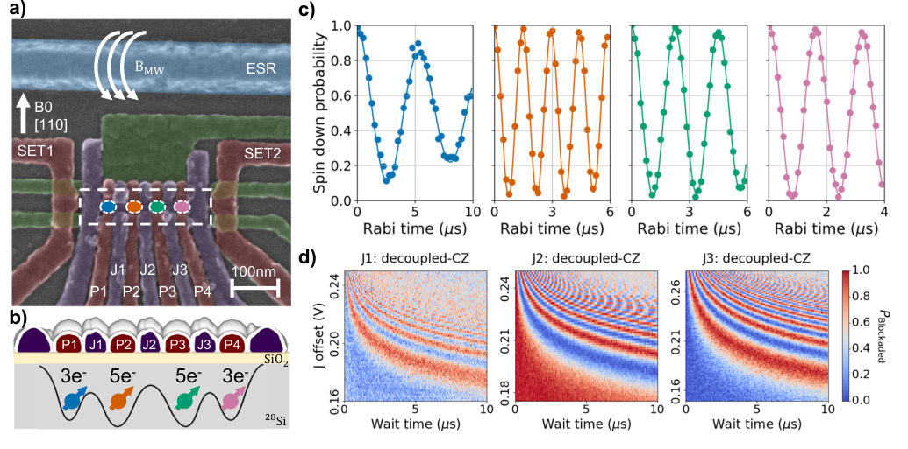
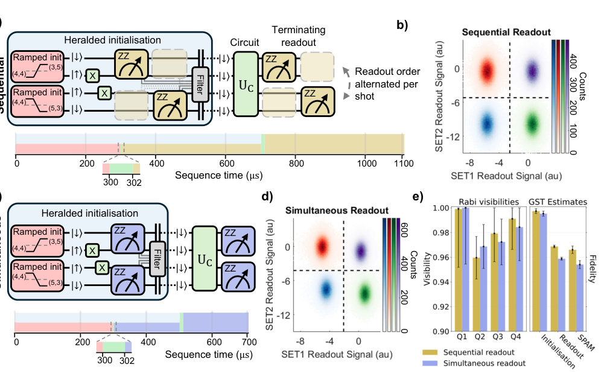
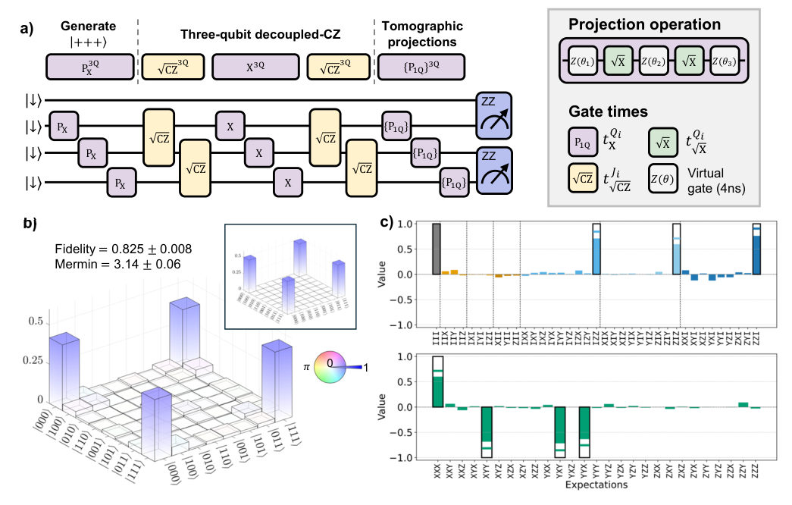
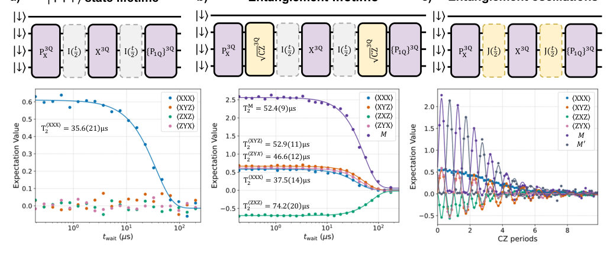
Summary. This paper demonstrates a four-qubit SiMOS quantum processor that successfully generates and verifies three-qubit GHZ and cluster states. It achieves this by implementing parallelized readout and a specialized gate sequence that protects entanglement from dephasing. This work provides a significant step toward scaling silicon-based quantum computing using industry-standard CMOS techniques.
Why it may be interesting. The use of a laddered decoupling sequence to extend entanglement lifetime toward the Hahn-echo limit and the demonstration of multipartite entanglement in a scalable semiconductor architecture are highly relevant to open quantum systems and quantum network research.
Main problem. Scaling SiMOS quantum dot processors beyond isolated double quantum dot unit cells by achieving high-fidelity coupling between unit cells and implementing efficient, parallelized initialization and readout.
Main result. Demonstrated a four-qubit SiMOS processor capable of generating maximally entangled three-qubit GHZ and cluster states, with entanglement lifetimes extended toward the Hahn-echo limit using a laddered decoupling sequence.
Method. The researchers used a decoupled-CZ (dCZ) gate set, FPGA-based heralded initialization, and parallelized Pauli spin blockade readout, while employing Gate Set Tomography and Mermin-witness operators for state verification.
Model / system. A four-qubit SiMOS (Silicon Metal-Oxide Semiconductor) processor consisting of a linear array of quantum dots in two coupled double quantum dot (DQD) unit cells, utilizing isotopically enriched silicon.
Key observables. Single- and two-qubit gate fidelities, Mermin witness values, coherence times (T2* and THahn), Rabi frequencies, and readout fidelity.
Important parameters / regimes. Larmor frequencies ~11.4 GHz, T2* between 4.8-6.2 us, THahn between 76.3-87.2 us, and two-qubit dCZ fidelities ~95.5-95.8%.
Assumptions / limitations. The dephasing is primarily driven by charge noise rather than hyperfine coupling; SPAM errors can be modeled and corrected via a uniform depolarizing channel.
Figures summary. Figures demonstrate the comparison of sequential vs. simultaneous readout, the calibration of detuning for parallel operation, the implementation of the laddered gate sequence, and the decay of Mermin values as a function of idle and exchange time.
Paper structure. The paper introduces the SiMOS platform, describes the architecture and control/readout hardware, details the gate implementation and decoupling strategies, presents the generation and verification of multi-qubit entanglement, and concludes with a discussion on scalability and noise sources.
Spin qubits in silicon-MOS (SiMOS) quantum dots have recently demonstrated compatibility with existing industry standard CMOS fabrication techniques. These devices have routinely achieved single- and two-qubit gate fidelities above 99% and demonstrated highly entangled two-qubit Bell states in isolated double quantum dot (DQD) unit cells, however coupling between unit cells has remained challenging. In this work, we present a two unit cell, four-qubit SiMOS processor with universal controllability and fully parallelised state initialisation and readout. We use this processor to generate maximally entangled three-qubit states, including the Greenberger-Horne-Zeilinger (GHZ) state, and certify multipartite entanglement through violation of the classical Mermin-witness bound. By using a fully symmetric dynamically decoupled gate sequence to create our entangled states, we are able to preserve the lifetime of the entanglement beyond $T_2^*$, to a time limited instead by $T_2^\textrm{Hahn}$. These demonstrations pave a road to the scalable operation of larger SiMOS processors, and achieving high purity, long-lived multi-qubit entangled states in them.
Authors: Zijun Wei, Mingdi Xu, Yefeng Song, Yangqian Yan, Lei Pan
Type: theory · Category: statistical mechanics · PDF: https://arxiv.org/pdf/2605.20930v1
Analysis basis: full PDF text, analyzed in chunks
Topic relevance: 🔥 correlated / nonlocal dissipation 4/5 · 🔥 non-equilibrium dynamics 4/5 · methods for driven-dissipative 3/5 · Rydberg arrays 2/5 · analog quantum simulation 2/5 · driven-dissipative phase transition 2/5 · entanglement & information structure 2/5 · exotic spin models in light-matter 2/5 · non-equilibrium universality 2/5 · scars & prethermalization 2/5
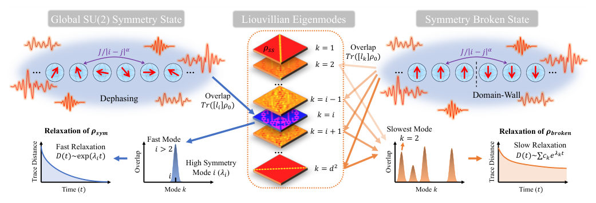
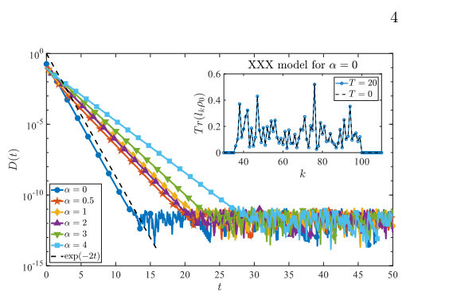
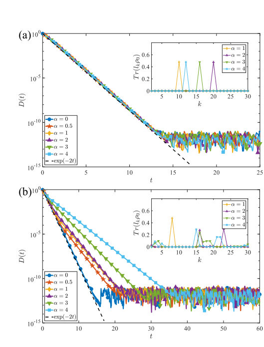
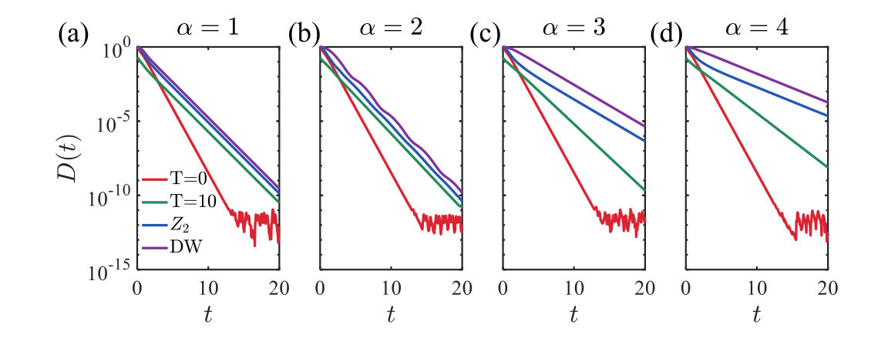
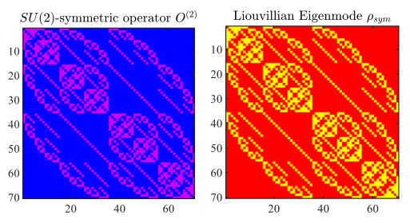
Summary. This paper identifies a mechanism where SU(2) symmetry protects a fast-decaying channel in a long-range XXZ spin chain. This protection causes a strong quantum Mpemba effect, where highly symmetric states relax much faster than less symmetric thermal states. The findings suggest that symmetry can be used to engineer and control relaxation dynamics in open quantum many-body systems.
Why it may be interesting. It provides a fundamental mechanism for controlling nonequilibrium pathways and many-body lifetimes in open quantum systems using symmetry as a control knob, which is highly relevant to the stability of states in trapped ions or Rydberg arrays.
Main problem. Understanding how symmetry constrains dissipative relaxation in open many-body systems and identifying the microscopic origin of the strong quantum Mpemba effect.
Main result. The authors discover a symmetry-protected fast-decay channel in an XXZ spin chain where SU(2) symmetry allows certain states to bypass slow decay modes, leading to an anomalous relaxation speed where states farther from equilibrium relax faster than closer ones.
Method. Liouvillian spectral decomposition, symmetry analysis using SU(2) and permutation groups, and analytical derivation of exact Liouvillian eigenmodes.
Model / system. A long-range spin-1/2 XXZ spin chain subject to local dephasing noise, described by a Lindblad master equation with an interaction exponent alpha.
Key observables. Trace distance (D(t)) from the steady state and the spectral weight/overlap of initial states with Liouvillian eigenmodes.
Important parameters / regimes. Anisotropy parameter (Delta), interaction range (alpha), and temperature (beta).
Assumptions / limitations. The system is governed by a Markovian Lindblad master equation with local dephasing jump operators.
Figures summary. Figure 1 provides a schematic of the mechanism showing how symmetric states couple to a single fast mode while symmetry-broken states project onto slow modes; Figure 2 shows the ground state relaxation dynamics.
Paper structure. The paper introduces the problem of symmetry-constrained relaxation, presents the analytical identification of a fast-decay mode at the SU(2) point, explores the effect of symmetry breaking and interaction range, and concludes with the emergence of the strong quantum Mpemba effect.
Understanding how symmetry constrains dissipative relaxation in open quantum many-body systems remains a central challenge in nonequilibrium physics. Here we uncover a symmetry-selective Liouvillian mechanism that protects an isolated fast-decay channel in a long-range XXZ spin chain subject to dephasing noise. At the \(SU(2)\)-symmetric point, highly symmetric initial states couple exclusively to an exact Liouvillian eigenmode with decay rate \(λ=-2\), producing universal exponential relaxation independent of system size and interaction range. Breaking the symmetry restores overlap with slow Liouvillian modes and substantially suppresses the relaxation dynamics. This symmetry-filtered mode accessibility naturally gives rise to a strong quantum Mpemba effect, where a state farther from the steady state relaxes anomalously faster than closer thermal states. Our results establish symmetry-protected fast relaxation as a mechanism for controlling nonequilibrium pathways in open quantum systems.
Authors: Luis Medina-Dozal, Alejandro R. Urzúa, Carlos A. González-Gutiérrez, José Récamier
Type: theory · Category: other · PDF: https://arxiv.org/pdf/2605.20542v1
Analysis basis: full PDF text, analyzed in chunks
Topic relevance: 🔥 Keldysh / 2PI / non-Gaussian methods 4/5 · 🔥 Tavis-Cummings & cavity-many-emitter 4/5 · entanglement & information structure 3/5 · methods for driven-dissipative 3/5 · non-equilibrium dynamics 2/5 · quantum measurements 2/5
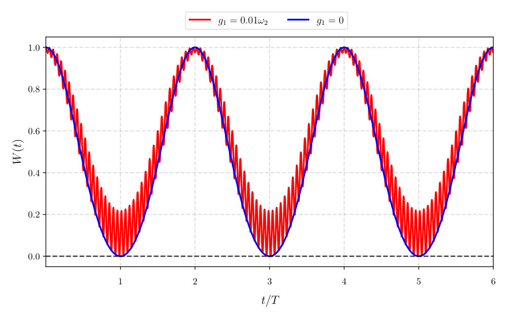
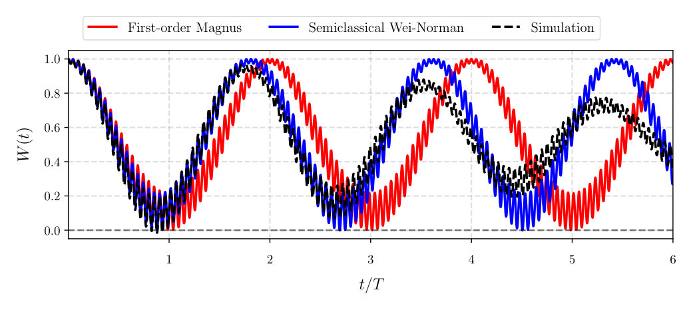
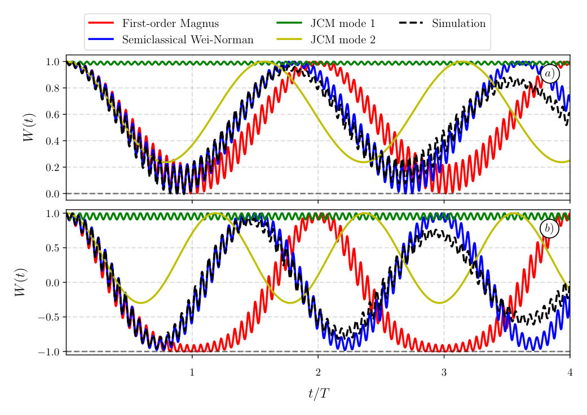
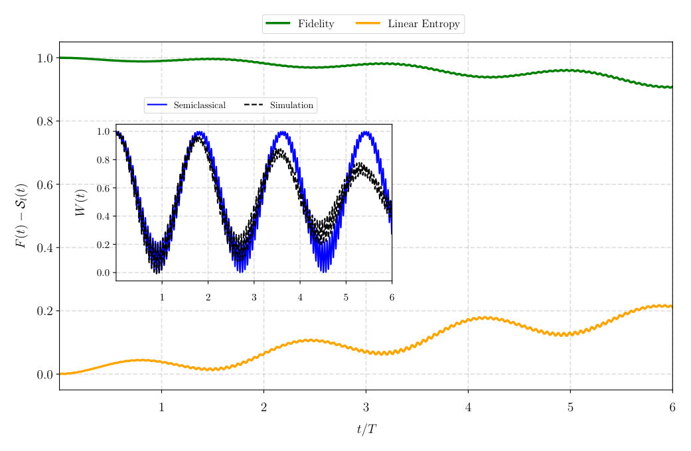
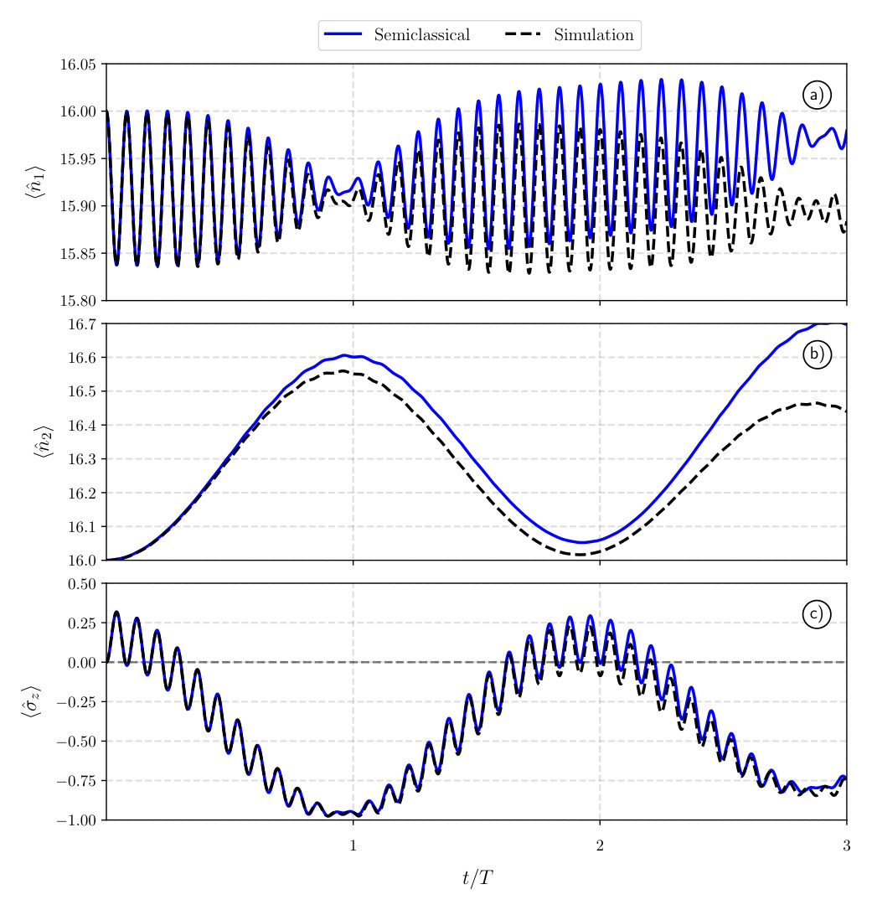
Summary. This paper presents an analytical approximation for the dynamics of a two-level system interacting with two off-resonant electromagnetic modes. By separating mean-field dynamics from quantum fluctuations, the method captures essential entanglement and back-action effects that standard semiclassical models miss. This allows for efficient study of complex multi-mode light-matter interactions.
Why it may be interesting. It provides a computationally efficient way to study complex atom-field interactions and entanglement generation in multi-mode cavity QED and circuit QED without requiring full quantum simulations.
Main problem. The two-mode Jaynes-Cummings model lacks an exact analytical solution because its dynamical Lie algebra is infinite-dimensional, unlike the single-mode case.
Main result. The authors develop an approximation method that decomposes the dynamics into a solvable semiclassical component and a residual part treating quantum fluctuations, maintaining high fidelity even during entanglement.
Method. The approach uses a semiclassical reduction (replacing field operators with c-numbers) combined with a sequence of unitary transformations and the Magnus expansion to capture quantum correlations and back-action.
Model / system. A two-level system (atom) coupled to two independent quantized electromagnetic modes within the Jaynes-Cummings framework under the Rotating Wave Approximation.
Key observables. Atomic inversion, average photon number, quantum fidelity, atomic coherence, and linear entropy.
Important parameters / regimes. Off-resonant regime (large detunings), large field amplitudes (coherent states), and coupling strengths (g1, g2).
Assumptions / limitations. The method assumes sufficiently large photon numbers to justify the semiclassical substitution and is specifically optimized for the off-resonant regime.
Figures summary. Figure 2 compares different analytical approximations against numerical simulations; Figure 3 shows how two modes cooperatively achieve atomic inversion; Figure 4 and 5 illustrate the evolution of fidelity, linear entropy, and photon numbers.
Paper structure. The paper begins by defining the algebraic complexity of the two-mode JCM, introduces a decomposition strategy into semiclassical and fluctuation components, applies the Magnus expansion and Wei-Norman theorem for solutions, and validates the method via numerical comparison with the full quantum model.
We study a two-level system coupled to two quantized electromagnetic modes within the Jaynes-Cummings framework. While the single-mode model is exactly solvable due to its conserved excitation number, yielding finite-dimensional invariant subspaces, the two-mode model extension presents a fundamental challenge: although the total excitation number remains conserved, each invariant subspace is infinite-dimensional, preventing a closed-form analytical solution. Our scheme separates the dynamics into a dominant, exactly solvable semiclassical component, the atom interacting with the mean fields of both modes, and treats the remaining quantum fluctuations through a sequence of unitary transformations that preserve essential quantum features. We validate our approach through direct comparison with numerical solutions, focusing on the non-resonant regime where multiple detunings give rise to rich interference effects and multi-timescale dynamics inaccessible to standard approximations. The method accurately reproduces atomic inversion, field observables, and fidelity over relevant timescales, while remaining computationally efficient.
Authors: Paranjoy Chaki, Arkaprava Sil, Priya Ghosh, Ujjwal Sen, Sudipto Singha Roy
Type: theory · Category: quantum information and computing · PDF: https://arxiv.org/pdf/2605.20350v1
Analysis basis: full PDF text, analyzed in chunks
Topic relevance: 🔥 entanglement & information structure 4/5 · correlated / nonlocal dissipation 3/5 · non-equilibrium dynamics 3/5 · driven-dissipative phase transition 2/5 · measurement-induced transitions 2/5 · methods for driven-dissipative 2/5
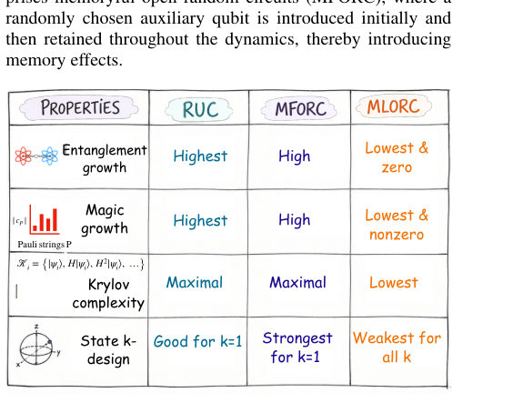
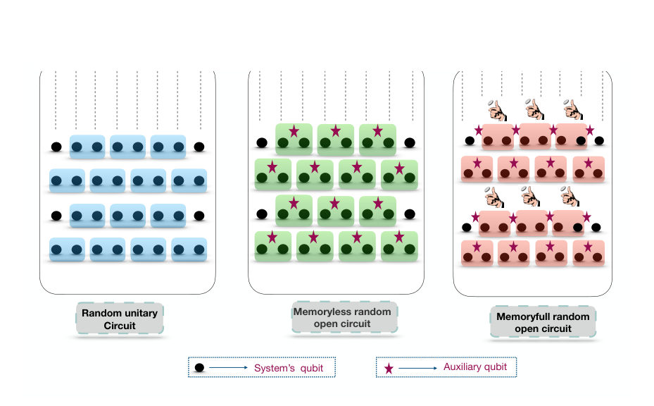
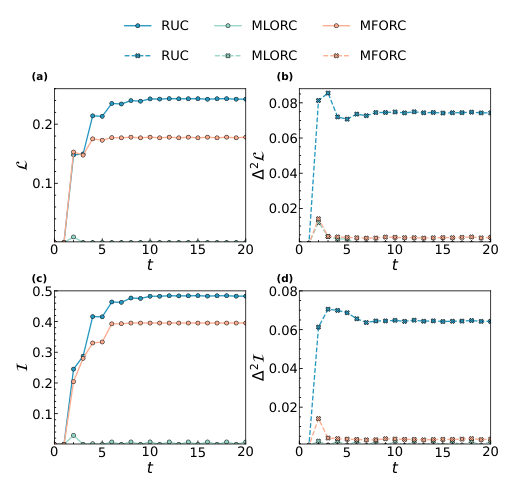
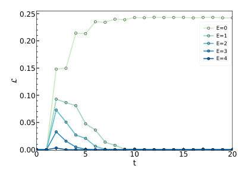
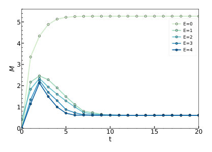
Summary. This paper explores how environmental memory influences the growth of quantum resources and complexity in random circuits. It finds that while memoryless environments destroy entanglement, memoryful environments can sustain non-classical features and even enhance pseudorandomness compared to closed systems.
Why it may be interesting. It provides deep insights into how controlled environmental interactions (memory) can be used to manipulate the generation of non-classicality and chaos in open quantum systems.
Main problem. Investigating how environmental memory affects the generation of quantum resources (entanglement, magic) and dynamical complexity (Krylov complexity, k-designs) in open random quantum circuits.
Main result. Environmental memory (MFORC) preserves entanglement and complexity, even outperforming closed systems in generating low-order k-designs, whereas memoryless environments (MLORC) cause entanglement to decay to zero while non-stabilizerness persists.
Method. Numerical simulations of random circuits using the Lanczos algorithm for Krylov complexity, trace distance for k-designs, and Rényi stabilizer entropy for non-stabilizerness.
Model / system. Three classes of random circuits: Random Unitary Circuits (RUC) for closed systems, Memoryless Open Random Circuits (MLORCO) with fresh auxiliary qubits, and Memoryful Open Random Circuits (MFORC) with retained auxiliary qubits.
Key observables. Logarithmic negativity, non-stabilizerness (magic), Krylov complexity, quantum state k-designs, mutual information, and fluctuations.
Important parameters / regimes. System size (Ns), number of auxiliary qubits, and the presence/absence of environmental memory.
Assumptions / limitations. The analysis is performed on relatively small system sizes (up to Ns=8) and focuses on accessible timescales for randomness generation.
Figures summary. Figure 1 compares circuit architectures and metrics; Figure 2 shows circuit diagrams; Figure 3 displays growth of entanglement and mutual information; Figure 5 shows SRE growth; Figure 7 shows Krylov complexity growth; Figure 8 shows trace distance for k-designs; Figure 9 illustrates GHZ-like vs W-state-like entanglement structures.
Paper structure. The paper introduces three circuit models, analyzes resource generation (entanglement and magic) from a resource-based viewpoint, evaluates dynamical complexity (Krylov and k-designs) from a statistical viewpoint, and concludes with the impact of memory as a control parameter.
Realistic quantum devices are inherently open and often involve environments with memory. Here, we investigate quantum resource generation in two classes of random circuits, namely, memoryless open and memoryful open random circuits, and compare their behavior with the well-explored random unitary circuit model. We show that environmental memory qualitatively alters the dynamics: while unitary and memoryful circuits exhibit sustained growth and saturation of entanglement and non-stabilizerness (magic); memoryless dynamics leads to a distinct behavior where entanglement decays to zero after transient growth, even though non-stabilizerness remains non-zero, indicating the persistence of nonclassical features beyond entanglement. Consistently, Krylov complexity reveals suppressed spreading of quantum states in memoryless circuits, in contrast to strong growth in unitary and memoryful dynamics, which saturates at the maximum value. Finally, we show that memoryful circuits more effectively approach low-order quantum-state k-designs than the other two circuits. Closed dynamics are therefore usually the most resource-generating, but are ideal; realistic dynamics are open and seem to generate less, but if they possess memory, they can sometimes even outdo closed dynamics.
Authors: Simon His, Camille Lévêque, Jérémie Caillat, Richard Taïeb, Jonathan Dubois
Type: theory · Category: disordered systems and neural networks · PDF: https://arxiv.org/pdf/2605.21223v1
Analysis basis: full PDF text, analyzed in chunks
Topic relevance: 🔥 scars & prethermalization 4/5 · non-equilibrium dynamics 3/5 · methods for driven-dissipative 2/5 · correlated / nonlocal dissipation 1/5 · driven-dissipative phase transition 1/5 · entanglement & information structure 1/5
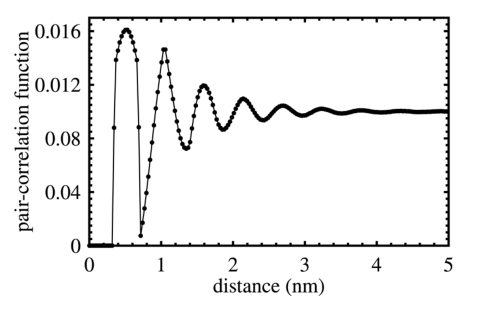
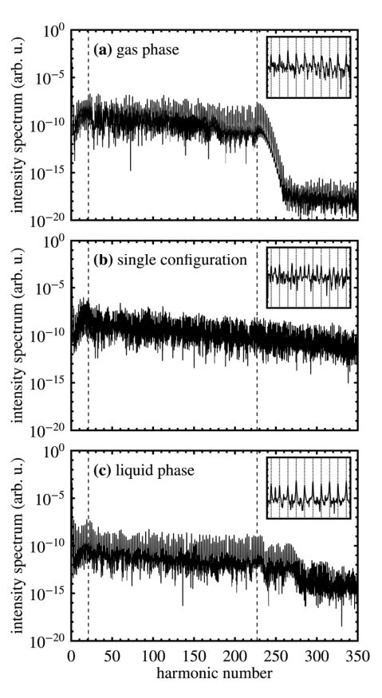
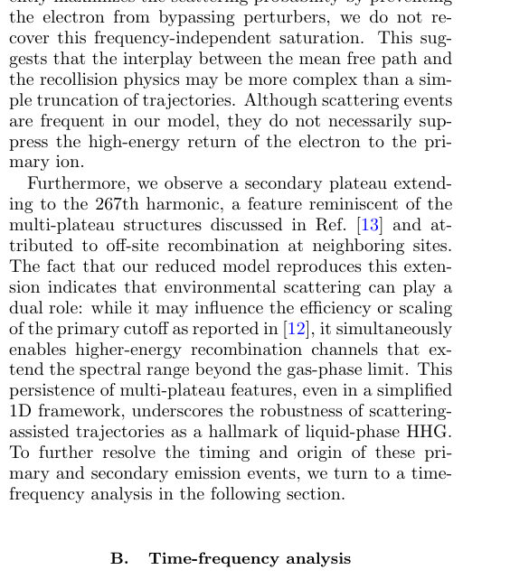
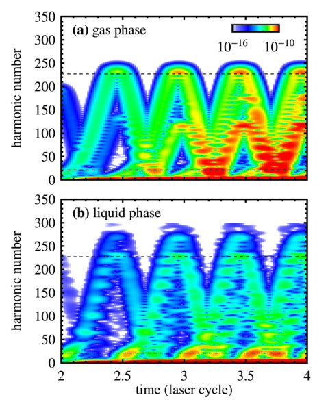
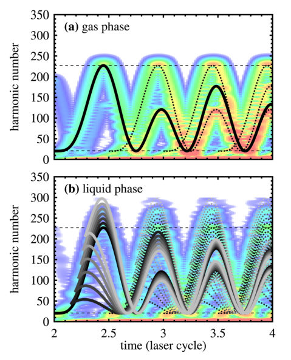
Summary. This paper studies how a disordered, liquid-like environment modifies high-order harmonic generation by inducing decoherence. It demonstrates that scattering from the environment leads to a secondary spectral plateau and the emergence of 'dynamic scars' where the electron density localizes around classical periodic orbits.
Why it may be interesting. It provides a mechanistic link between structural disorder and decoherence in a time-dependent framework, extending the concept of quantum scars from static systems to driven, open-system dynamics.
Main problem. Investigating how a stochastically structured, disordered environment (simulating a liquid phase) affects high-order harmonic generation (HHG) and drives the transition from quantum to classical behavior.
Main result. The disordered environment induces global decoherence and a secondary HHG plateau due to off-site recombination, causing the electron probability density to localize around unstable classical periodic orbits (dynamic scars).
Method. Numerical solution of the 1D time-dependent Schrödinger equation using a symplectic integrator, combined with an ensemble average over stochastic configurations to represent the density matrix.
Model / system. A single atom with a soft-Coulomb potential in a 1D environment containing a stochastic distribution of Gaussian-well perturbers, driven by a strong laser field.
Key observables. HHG intensity spectra, harmonic amplitudes/cutoff, system purity, and photoelectron probability density.
Important parameters / regimes. Laser intensity (7.896e14 W/cm2), wavelength (1030 nm), mean inter-scatterer distance (10 a.u.), and ionization potential (0.90 a.u.).
Assumptions / limitations. The system is modeled in one dimension to isolate elastic scattering, and the environment is treated via ensemble averaging rather than a Markovian reservoir.
Figures summary. Figure 1 shows the pair-correlation function of the scatterers; Figure 6 illustrates the decay of purity over time; Figure 9 shows the spatial component of the flow for classical trajectories.
Paper structure. The paper introduces the problem of HHG in liquids, describes the 1D stochastic model and numerical methods, analyzes the resulting HHG spectra and decoherence dynamics, and concludes by linking the results to the concept of quantum scars.
Using one-dimensional simulations analyzed through the lens of open quantum systems, we study the photoelectron's strong-field dynamics from an atom surrounded by a scattering environment stochastically structured. We theoretically investigate high-order harmonic generation from this situation. We show that local dephasing of the photoelectron wavepacket induced by elastic scattering leads to global decoherence. This drives a transition from quantum to classical behavior, as witnessed by the photoelectron probability density localizing around specific trajectories of the classical analog system: unstable periodic orbits. This phenomenon mirrors quantum scars traditionally observed in the eigenfunctions of time-independent systems, such as quantum billiards. Here, it emerges in-situ within a time-dependent framework, manifesting directly in the real-time dynamics from the ground state rather than solely through spectral analysis.
Authors: Zhongshu Hu, Yajing Guo, Yu-Dong Wei, Bing-Chen Yao, Zhentian Qian, Xin-Chi Zhou, Bao-Zong Wang, Jianing Yang, Xuzong Chen, Shengjie Jin, Xiong-Jun Liu
Type: both · Category: quantum gases · PDF: https://arxiv.org/pdf/2605.21441v1
Analysis basis: full PDF text, analyzed in chunks
Topic relevance: 🔥 analog quantum simulation 4/5 · 🔥 non-equilibrium dynamics 4/5 · non-equilibrium universality 3/5 · entanglement & information structure 1/5
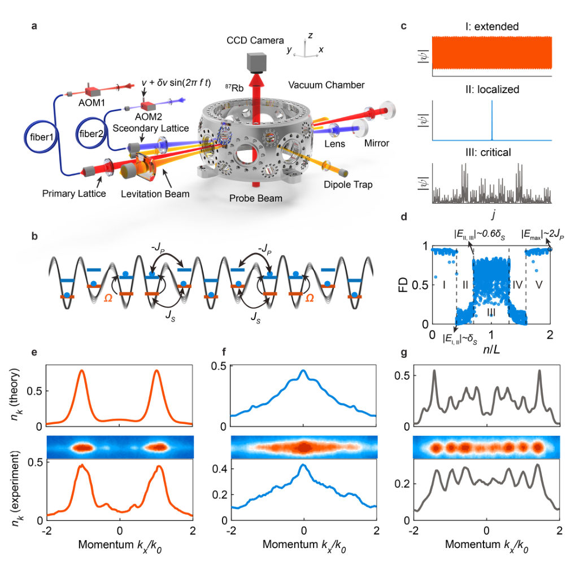
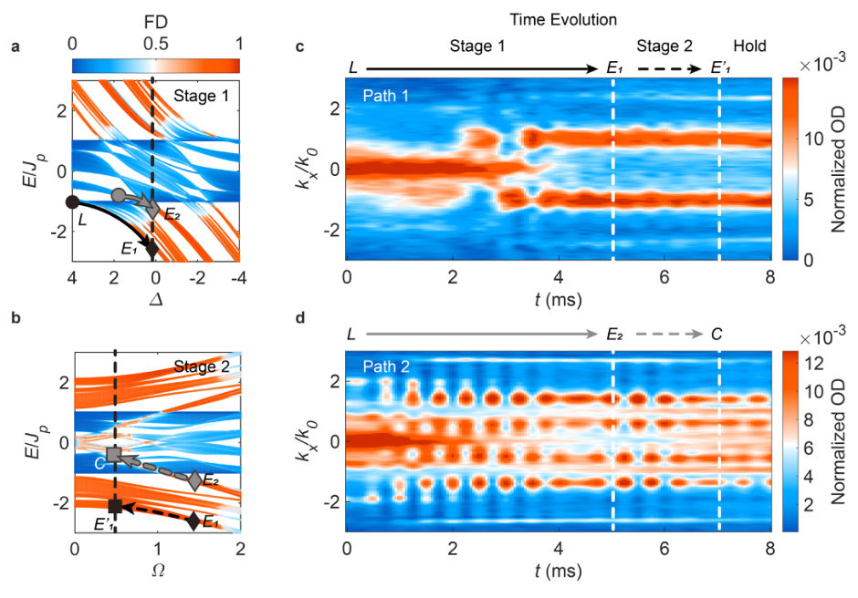
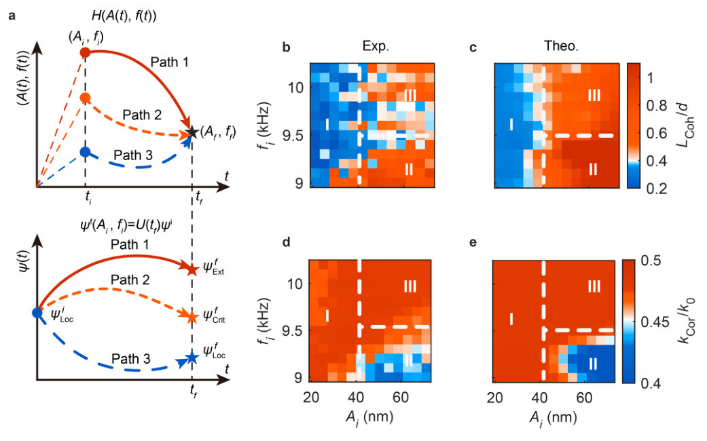
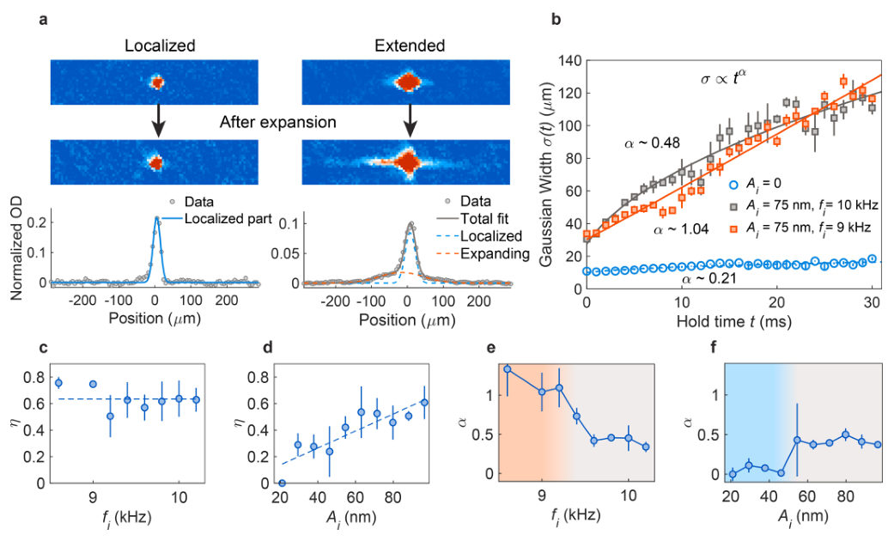
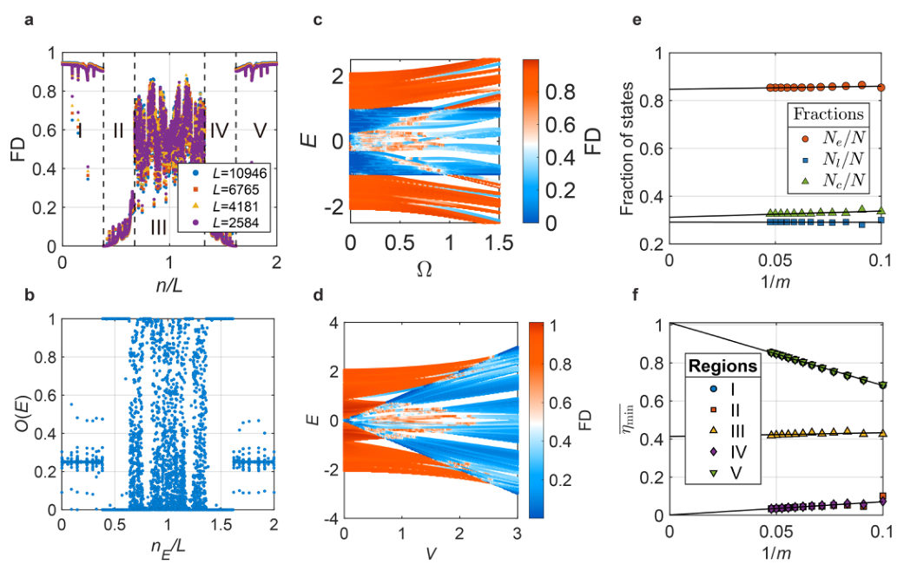
Summary. This paper reports the experimental observation of a tripartite quantum phase where extended, localized, and critical states coexist in an orbital optical lattice. By using a two-stage Floquet protocol, the authors successfully prepare and distinguish these states using momentum-space and real-space diagnostics. The work demonstrates how inter-orbital coupling can be used to engineer complex localization physics.
Why it may be interesting. It provides a versatile platform for studying unconventional critical phenomena, localization physics, and the transition between different types of quantum states using Floquet engineering.
Main problem. The observation and characterization of a tripartite quantum phase where extended, localized, and critical states coexist over finite spectral windows in a quasiperiodic system.
Main result. The researchers experimentally realized and identified a tripartite phase in an orbital optical lattice, demonstrating that inter-orbital coupling creates incommensurately distributed zeros that drive the emergence of critical states.
Method. The study uses a two-stage Floquet engineering protocol (frequency and amplitude ramps) for state preparation, combined with Renormalization Group (RG) analysis for theoretical validation and expansion dynamics for transport characterization.
Model / system. Ultracold 87Rb atoms in a 1D quasiperiodically driven s-p orbital optical lattice, where s and p orbitals are coupled via Floquet modulation.
Key observables. Momentum distributions (via TOF), Fractal Dimension (FD), Spatial Coherence Length (L_Coh), Momentum-space Correlation Length (k_Cor), and expansion exponents (alpha).
Important parameters / regimes. Inter-orbital coupling (Omega), quasiperiodic modulation strength (delta_s, delta_p), shaking frequency (f), and shaking amplitude (A).
Assumptions / limitations. The system is treated as non-interacting (mean-field interactions are negligible), and the primary lattice is deep enough to justify a localized Wannier basis.
Figures summary. Fig 1: Experimental setup and visual comparison of wavefunctions; Fig 2: Fractal dimension and phase regions; Fig 3: State preparation pathways; Fig 5: Phase diagram via dual-space analysis; Fig 7: Momentum distribution micromotion; Fig 8: Expansion dynamics.
Paper structure. Introduction to the tripartite phase problem, experimental setup and Floquet engineering description, development of the two-stage preparation protocol, identification of the three phases using dual-space correlation lengths, verification via expansion dynamics and RG theory, and discussion of micromotion and robustness.
The disordered quantum world hosts three fundamental types of states: extended, localized, and critical, of which the critical states are confined to fine-tuned critical points or mobility edges in randomly disordered systems. The tripartite phase, with all three types of states coexisting over finite spectral windows, represents a hallmark distinction between quasiperiodic and truly random systems in the localization physics. Here, we report the realization of this exotic phase in a quasi-periodically driven orbital optical lattice with ultracold atoms. The optical lattice with a quasiperiodic Floquet modulation coupling s and p orbitals is realized in experiment and shown to host the tripartite phase from exact theory. We develop a two-stage protocol to precisely prepare and detect the three types of quantum states. The characteristic exponents of these states are determined from expansion dynamics, showing their distinct universal transport properties. Our study marks a significant advancement in exploring unconventional critical phenomena and localization physics with ultracold atoms.
Authors: Ian Low, Pallab Goswami
Type: theory · Category: statistical mechanics · PDF: https://arxiv.org/pdf/2605.20661v1
Analysis basis: full PDF text, analyzed in chunks
Topic relevance: 🔥 entanglement & information structure 4/5 · non-equilibrium dynamics 3/5 · analog quantum simulation 2/5 · scars & prethermalization 2/5
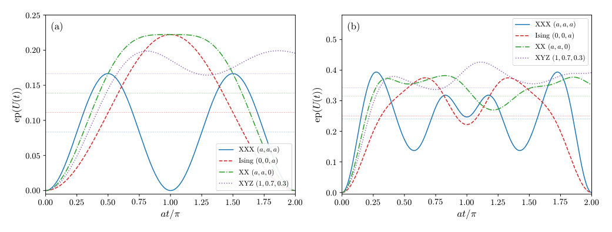
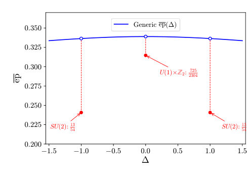
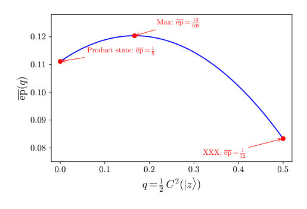
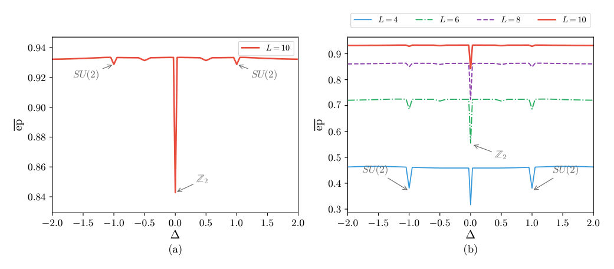
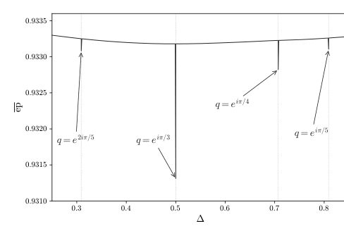
Summary. This paper demonstrates that the ability of a quantum operator to generate entanglement can act as a probe for symmetry and integrability. By studying Heisenberg spin chains, the authors show that higher symmetry leads to a suppression of entangling power. The results bridge the gap between small-scale quantum gates and the thermodynamic limit of many-body systems.
Why it may be interesting. It provides a new operator-based diagnostic for detecting symmetry and integrability, which is highly relevant for characterizing the dynamics of programmable quantum simulators.
Main problem. Investigating whether the entangling power of a unitary operator can serve as a dynamical diagnostic for symmetry and integrability in quantum many-body systems.
Main result. The study establishes that increasing symmetry suppresses entangling power, showing sharp dips at SU(2) and free-fermion points in finite chains, while the two-magnon S-matrix shows vanishing entangling power at SU(2) points.
Method. The authors use an efficient algorithm for computing time-averaged entangling power via the diagonal ensemble, alongside analytical derivations using the operator-state correspondence and the Bethe Ansatz.
Model / system. Anisotropic Heisenberg (XXZ, XXX, XYZ) spin chains of various sizes (two-site, finite-size, and thermodynamic limit) and the two-magnon S-matrix.
Key observables. Time-averaged entangling power (e_p), linear entropy, and the S-matrix scattering amplitudes.
Important parameters / regimes. Anisotropy parameter (Delta), spin magnitude (s=1/2, 1), system size (L), and rapidity (theta).
Assumptions / limitations. The analysis assumes Haar-random product states for the definition of entangling power and focuses on integrable sectors of the XXZ model.
Figures summary. Figure 1 shows instantaneous entangling power oscillations; Figure 3 illustrates the non-monotonic dependence of e_p on the isospectral parameter q; Figure 4 shows the scaling of the SU(2) dip with system size.
Paper structure. The paper introduces the entangling power concept, analyzes two-site models to establish a symmetry hierarchy, extends the study to finite-size XXZ chains, and concludes with the thermodynamic limit via the two-magnon S-matrix.
The entangling power of a unitary operator quantifies its ability to generate entanglement from product states and provides a natural probe of quantum many-body dynamics. Entanglement extremization at points of enhanced symmetry has previously been observed in high-energy scattering. In this work we compute the time-averaged entangling power of anisotropic Heisenberg spin chains across two-site models and finite-size systems, as well as the entangling power of the two-magnon $S$-matrix in the thermodynamic limit. For two-site models we establish a monotonic hierarchy: the entangling power decreases as the symmetry group grows, reaching its minimum at the $SU(2)$ XXX point. Finite-size XXZ chains exhibit sharp dips at the $SU(2)$ points $Δ=\pm 1$ and the free-fermion point $Δ=0$, with the free-fermion dip decaying much more slowly with system size. In the thermodynamic limit, we decompose the two-magnon $S$-matrix into quantum logic gates -- Identity, SWAP, and $σ_z\otimesσ_z$ -- and show that the entangling power vanishes for all scattering energies at the $SU(2)$ points, where the $S$-matrix reduces to the Identity gate, while the free-fermion point achieves the maximum -- the opposite of the finite-size many-body behavior. The entangling power can serve as an {\em operator} diagnostic for symmetry and selected aspects of integrability in quantum simulations of spin-chain dynamics.
Authors: Neill Lambert, Yi-Te Huang, Yueh-Nan Chen, Paul Menczel, Franco Nori
Type: theory · Category: other · PDF: https://arxiv.org/pdf/2605.20703v1
Analysis basis: full PDF text, analyzed in chunks
Topic relevance: 🔥 correlated / nonlocal dissipation 4/5 · 🔥 methods for driven-dissipative 4/5 · non-equilibrium dynamics 3/5
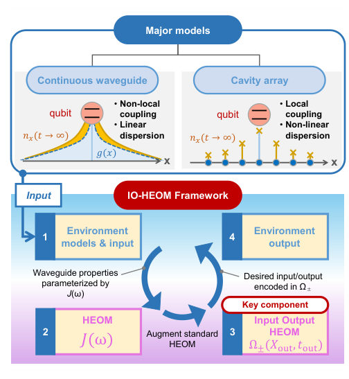
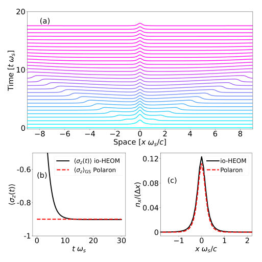
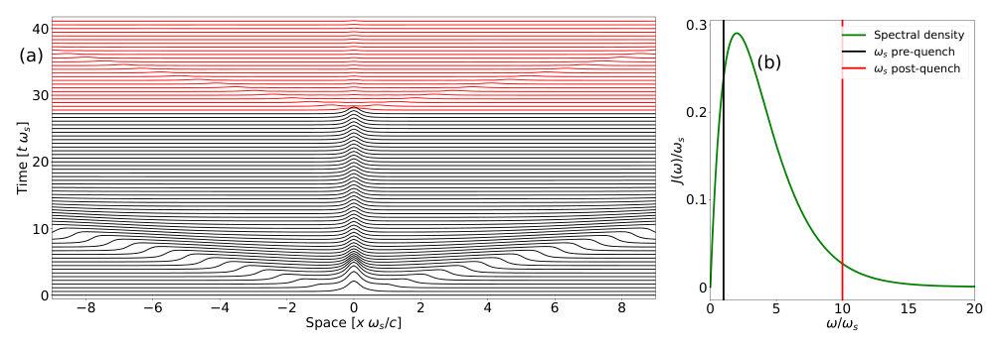
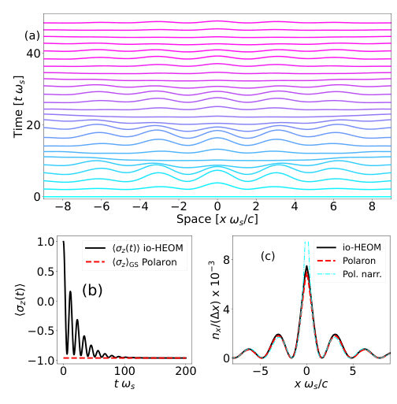
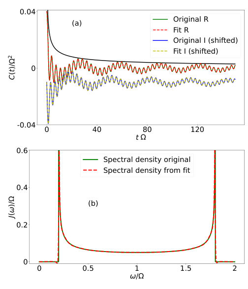
Summary. This paper introduces the 'input-output Hierarchical Equations of Motion' (io-HEOM) to simulate strong-coupling dynamics in waveguide QED. It demonstrates how the method captures non-Markovian effects from both spatial non-locality and non-linear dispersion. The work is significant for its ability to model the dynamics of virtual photon release and persistent oscillations in structured environments.
Why it may be interesting. It provides a powerful, unified numerical tool (io-HEOM) for studying non-Markovian waveguide QED in regimes where standard approximations fail, specifically addressing complex phenomena like photon-atom hybridization and Van Hove singularities.
Main problem. Modeling a single qubit in a 1D waveguide beyond the standard Markovian and perturbative approximations, specifically addressing non-Markovianity arising from non-local coupling and non-linear dispersion.
Main result. The developed io-HEOM method accurately captures non-Markovian dynamics, including the release of virtual bound photons during a qubit frequency quench and persistent oscillations due to Van Hove singularities in cavity arrays.
Method. The input-output Hierarchical Equations of Motion (io-HEOM) framework, supplemented by the Prony method for correlation function fitting and Silbey-Harris polaron theory for analytical validation.
Model / system. A single qubit interacting with a 1D waveguide, including both continuous waveguides with linear dispersion and 1D cavity arrays with non-linear dispersion.
Key observables. Photon density/occupation, qubit population, spatial photon profile, and renormalized qubit frequency.
Important parameters / regimes. Strong-coupling and ultra-strong-coupling regimes, spectral density (Ohmic and Lorentzian), and non-local coupling functions.
Assumptions / limitations. The multi-exponential ansatz for the bath correlation function is truncated at a finite hierarchy level, and the Prony method fits the correlation function only up to a fixed finite time.
Figures summary. Figure 1 provides a schematic of the two studied waveguide scenarios and the io-HEOM framework; Figure 2 shows photon density, qubit population, and steady-state profiles for an Ohmic waveguide; Figure 3 illustrates photon emission following a frequency quench; Figure 4 shows dynamics for a Lorentzian spectral density; Figure 5 demonstrates the Prony method for correlation function fitting; Figure 6 shows photon occupation and qubit dynamics in a cavity array.
Paper structure. The paper introduces the io-HEOM framework, applies it to a continuous waveguide with non-local coupling to study bound photons and photon release, extends the study to cavity arrays with non-linear dispersion, validates results using polaron theory, and discusses the numerical implementation via the Prony method.
We consider the problem of modeling a single qubit in contact with a one-dimensional waveguide beyond the standard perturbative and Markovian approximations. Using the recently developed input-output hierarchical equations of motion (io-HEOM), we investigate multiple examples of such waveguides, characterized by different spectral densities. Our examples highlight that the io-HEOM method can accurately capture non-Markovianity in waveguide QED from two distinct origins. The first source of non-Markovianity is spatially non-local coupling between the qubit and the waveguide. By examining two examples with non-local coupling, we show how the coupling function affects the steady-state bound photons, and demonstrate the release of these photons when the qubit energy is quenched. The second source of non-Markovianity is non-linear dispersion. We illustrate this scenario using the example of a cavity array with point-like coupling, where the non-linear dispersion leads to persistent oscillations due to Van Hove singularities in the spectral density.
Authors: Chen Xu, Pengfei Zhang
Type: theory · Category: disordered systems and neural networks · PDF: https://arxiv.org/pdf/2605.20656v1
Analysis basis: full PDF text, analyzed in chunks
Topic relevance: 🔥 entanglement & information structure 4/5 · 🔥 non-equilibrium dynamics 4/5 · scars & prethermalization 2/5
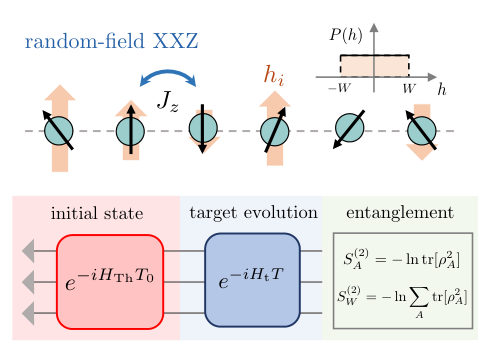
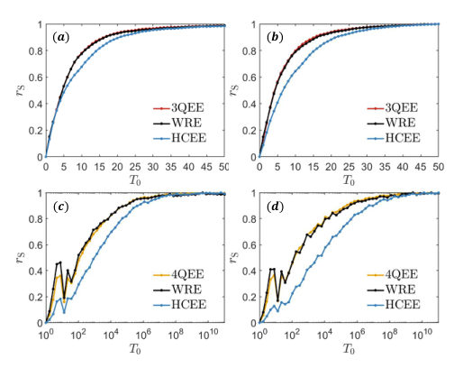
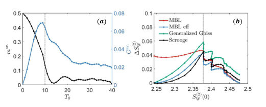
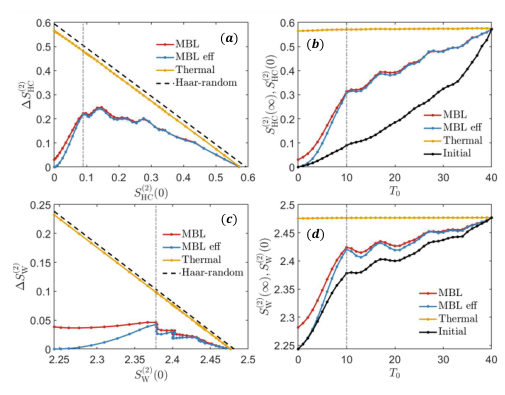
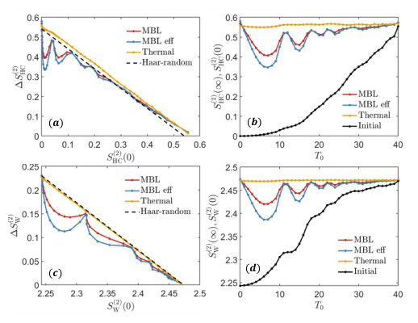
Summary. This paper explains why entanglement growth in MBL systems can first increase and then decrease when starting from structured states. By analyzing Wehrl-Rényi entropy, the authors show that this behavior is tied to the relaxation of local magnetization and inter-site correlations. The findings demonstrate that the specific polarization of the initial state is a key driver of entanglement dynamics.
Why it may be interesting. It provides a fine-grained understanding of how initial-state structure and local conserved quantities govern entanglement dynamics and complexity in non-equilibrium many-body systems.
Main problem. The paper investigates the physical origin of non-monotonic entanglement growth in Many-Body Localized (MBL) systems when using structured initial states.
Main result. The authors identify two dynamical regimes: the first is driven by the relaxation of Local Integrable of Motion (LIOM) magnetization, and the second is driven by inter-site correlations. They show that the non-monotonicity is linked to the polarization of the initial state, disappearing for x/y-direction product states.
Method. The study uses numerical simulations of the XXZ model and a phenomenological LIOM-based model, supplemented by a Generalized Gibbs Ensemble (GGE) and a 'Scrooge ensemble' approach to analyze entanglement dynamics.
Model / system. A 1D quantum spin-1/2 random-field XXZ model with open boundary conditions, including both the microscopic Hamiltonian and a phenomenological model based on Local Integrals of Motion (LIOMs).
Key observables. Rényi entanglement entropy (HCEE and nQEE), Wehrl-Rényi entropy (WRE), local magnetization, and nearest-neighbor correlations.
Important parameters / regimes. Initial state preparation time (T0), disorder strength (W), and initial state polarization (z-direction vs. x/y-direction).
Assumptions / limitations. In the phenomenological model, higher-order many-body terms are neglected, and the LIOM operators are approximated by local spin operators.
Figures summary. Figures illustrate the non-monotonic entanglement growth for z-polarized states and show that the distinct two-regime separation disappears for x/y-polarized states.
Paper structure. The paper introduces the problem of non-monotonic entanglement, describes the model and initial state preparation, presents the analysis of entanglement growth regimes using WRE and EE, compares microscopic and phenomenological models, and concludes with implications and future directions.
Understanding how complex entanglement structures emerge is a central problem in quantum many-body physics. Recent work by Zhang et al. has considered structured initial states prepared by evolving a product state under a chaotic Hamiltonian for a finite time before quenching to the target Hamiltonian. In this setup, total entanglement entropy growth in many-body localized systems exhibits two distinct regimes, first increasing and then decreasing as the initial entanglement is tuned. In this work, we identify the physical origin of this behavior by analyzing the dynamics of both the Rényi entanglement entropy and the Wehrl-Rényi entropy in the random-field XXZ model, the latter of which characterizes multipartite entanglement. We show that a similar non-monotonic dependence on the initial entanglement also appears in the net growth of the Wehrl-Rényi entropy for product states polarized along the $z$-direction. The first regime is governed by a finite magnetization associated with local integrals of motion, while the second reflects inter-site correlations. In contrast, for product states in the $x/y$-direction, the entanglement growth exhibits a monotonic decay. Our results provide a more fine-grained picture of how distinct initial-state properties shape entanglement dynamics in many-body localized systems.
Authors: Koji Hashimoto, Norihiro Tanahashi, Kentaroh Yoshida
Type: theory · Category: statistical mechanics · PDF: https://arxiv.org/pdf/2605.20995v1
Analysis basis: full PDF text, analyzed in chunks
Topic relevance: 🔥 entanglement & information structure 4/5 · scars & prethermalization 3/5 · non-equilibrium dynamics 2/5
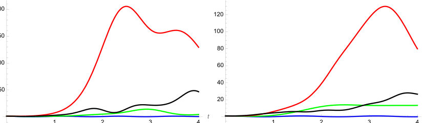
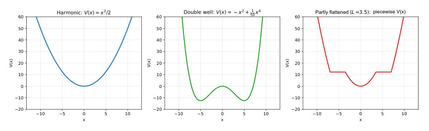
Summary. This paper demonstrates that the geometry of the Wasserstein space of quantum states undergoes a dimensional reduction as a system becomes chaotic. By showing that quantum scrambling induces a folding structure in this space, the authors propose a new diagnostic for chaos and support the idea that holography emerges from such dimensional reduction.
Why it may be interesting. It provides a new geometric language (optimal transport) to unify diverse phenomena like quantum scars, Lyapunov exponents, and scrambling, while offering a potential geometric mechanism for the emergence of holographic spacetime.
Main problem. Investigating the relationship between quantum chaos, quantum scrambling, and the geometric structure of the Wasserstein space of energy eigenstates.
Main result. The effective dimension of the Wasserstein space decreases as a quantum system becomes more chaotic, a process driven by a 'folding' structure induced by quantum scrambling.
Method. The authors use Sinkhorn-regularized optimal transport on Husimi Q-representations and apply the Gram-spectrum method with Multidimensional Scaling (MGS) to embed the Wasserstein distance into Euclidean space.
Model / system. The study utilizes several models: 1D potentials (harmonic oscillator, double-well, and partly flattened oscillator) and a 2D coupled harmonic oscillator with a quartic mixing term controlled by a coupling constant g.
Key observables. Effective dimension of Wasserstein space, Out-of-Time-Ordered Correlators (OTOC), Lyapunov exponent, and Gram-matrix eigenvalue decay constant B.
Important parameters / regimes. Coupling constant g (controlling integrability to chaos), Sinkhorn regularization parameter epsilon, and phase-space grid resolution.
Assumptions / limitations. The results are based on truncated harmonic oscillator bases and discretized phase-space grids; the authors note that higher energy levels may introduce more complex non-Euclidean geometry.
Figures summary. Figures show OTOC growth (scrambling), potential energy profiles, Husimi Q-representations in phase space, Wasserstein distance heatmaps, and 2D MDS embeddings showing line vs. folded structures.
Paper structure. The paper introduces the problem of dimensional reduction, presents 1D models to demonstrate scrambling-induced folding, analyzes the 2D coupled oscillator to show chaotic dimensional reduction, and concludes with a discussion on the holographic manifold hypothesis and numerical robustness.
We find that the effective dimension of the Wasserstein space of energy eigenstates decreases as a quantum system becomes more chaotic. To demonstrate this, we study a quantum coupled harmonic oscillator system using Husimi Q-representations, to which Sinkhorn-regularized optimal transport is applied to construct an embedding geometry via the Gram-spectrum method. We also demonstrate that exponential OTOC growth, referred to here as quantum scrambling even in the absence of chaos, induces a folding structure in the emergent Wasserstein space, which may underlie the chaotic reduction of the Wasserstein dimension. At the separatrix (the scrambling point) of the inverted harmonic oscillator, the Wasserstein distance correctly captures the Lyapunov exponent. Furthermore, we discover that a branching structure in the Wasserstein space signals quantum scar states within the chaotic sea of phase space. Our optimal transport approach thus provides a new diagnostic for quantum chaos, quantum scrambling, quantum scars, and quantum Lyapunov exponents. The observed chaotic dimensional reduction also supports the recent conjecture [arXiv:2604.17649] that the Wasserstein space serves as an emergent holographic space through the manifold hypothesis, since chaoticity is a characteristic signature of black holes in holography.
Authors: Luiz Couto Correa Pinto Filho, Yingxuan Chen, Frederik Werner Isaksen, Daniel Allepuz-Requena, Angelo Manetta, Dennis Henneberg Høj, Ulrich Busk Hoff, Alexander Huck, Ulrik Lund Andersen
Type: experiment · Category: other · PDF: https://arxiv.org/pdf/2605.20902v1
Analysis basis: full PDF text, analyzed in chunks
Topic relevance: 🔥 quantum measurements 4/5 · 🔥 quantum optics experiment 4/5
Summary. The researchers successfully demonstrated Coherent Feedback Cooling of a mechanical membrane at room temperature, achieving a massive reduction in phonon number. This approach overcomes the limitations of standard laser cooling in the sideband-unresolved regime and provides a roadmap for reaching the quantum ground state without cryogenics.
Why it may be interesting. This work is highly relevant to quantum optics and open quantum systems as it demonstrates a practical implementation of coherent feedback control to manipulate the steady-state of a macroscopic mechanical mode, bypassing the limits of measurement-based feedback.
Main problem. The challenge of cooling macroscopic mechanical resonators to the quantum regime at room temperature, specifically overcoming the fundamental limits of dynamical backaction cooling in the sideband-unresolved regime.
Main result. Experimental demonstration of Coherent Feedback Cooling (CFC) on an ultracoherent membrane at room temperature, achieving a phonon occupation reduction from 5.5e6 to 166 and an effective temperature of 9.1 mK.
Method. An all-optical coherent feedback scheme where the optical probe field is re-injected after an engineered delay and displacement to provide a feedback force proportional to mechanical momentum.
Model / system. An optomechanical system featuring a high-Q silicon nitride density phononic-crystal membrane in a Fabry-Perot cavity, involving two optical polarization modes (horizontal and vertical) due to birefringence.
Key observables. Phonon occupation number, effective temperature, mechanical position power spectral density (PSD), and phase-space uncertainty area.
Important parameters / regimes. Mechanical frequency of 1.14 MHz, quality factor of 1.1e8, cavity linewidth of 3.7 MHz, and a cooling factor of 3.3e4.
Assumptions / limitations. The system is treated in the linearized regime; performance is currently limited by technical noise (laser-lock instability, frequency fluctuations) and in-loop optical losses.
Figures summary. Fig 1 shows the experimental schematic and phase-space evolution; Fig 3 shows numerical phonon occupation vs. delay/linewidth; Fig 6 shows predicted performance gains from upgrading coupling strength and reducing noise.
Paper structure. The paper introduces the problem of room-temperature quantum optomechanics, describes the experimental setup and CFC protocol, presents the experimental results for phonon reduction, discusses the impact of technical noise, and concludes with a predictive model for future system upgrades.
Optomechanical systems provide a versatile platform for precision measurements and investigations of fundamental physics, where bringing macroscopic resonators into the quantum regime is a widely pursued goal. Achieving such quantum behavior of solid-state mechanical resonators at room temperature would greatly broaden their applications by removing the need for cryogenic environments. Reaching this goal requires efficient cooling of mechanical motion, among various laser cooling methods, dynamical backaction cooling (DBC) is widely utilized in experiments but fundamentally limited when operating in the sideband-unresolved regime. Coherent feedback cooling (CFC) can overcome this limitation, while avoiding state collapse and the electronic restrictions inherent to measurement-based feedback. Here, we experimentally demonstrate CFC using an ultracoherent density phononic crystal membrane. By combining CFC with strong DBC in a relatively narrow cavity, we achieve a phonon occupation reduction from $5.5\times10^{6}$ to $166\pm7$, corresponding to a cooling factor of $3.3\times10^{4}$ at room temperature, even with current experimental limitations. Our results show the potential of CFC for approaching the ground state of high-$Q$ membranes at room temperature.
Authors: Sarah Garcia Jones, Trevyn F. Q. Larson, Sai Pavan Chitta, Heli Vora, Varun Verma, Sae Woo Nam, José Aumentado, Jens Koch, Raymond W. Simmonds, András Gyenis
Type: both · Category: quantum information and computing · PDF: https://arxiv.org/pdf/2605.20652v1
Analysis basis: full PDF text, analyzed in chunks
Topic relevance: 🔥 QC/QI experiment 4/5 · quantum measurements 2/5 · quantum optics experiment 2/5
Summary. This paper investigates the nonlinear properties of a tungsten silicide nanowire used as a weak link in a superconducting RF-SQUID. It demonstrates that the device follows a non-sinusoidal current-phase relation and shows that metastable flux states can be extremely long-lived. These findings suggest WSi is a promising material for developing new types of nonlinear superconducting quantum elements.
Why it may be interesting. This work is relevant for researchers in open quantum systems and quantum optics because it explores the control of decoherence and relaxation in highly nonlinear, metastable quantum states and demonstrates a platform for engineering non-standard energy-phase relationships.
Main problem. The study aims to characterize the nonlinear behavior and current-phase relation (CPR) of a tungsten silicide (WSi) nanowire weak link to determine if it is better described by a non-sinusoidal Josephson junction model or a quantum phase slip (QPS) model.
Main result. The researchers demonstrated that the WSi weak link exhibits a non-sinusoidal, sawtooth-like CPR and found that both the skewed Josephson junction and QPS models can describe low-energy spectra, though differences emerge at higher energy levels. They also measured long-lived (up to one hour) metastable flux states.
Method. The study uses microwave spectroscopy and single-shot readout of flux-dependent resonance frequencies and relaxation times. Theoretical modeling involves circuit quantization, symplectic geometry for the QPS model, and the Born-Oppenheimer approximation.
Model / system. The physical system is an RF-SQUID containing a WSi nanowire weak link embedded in a three-dimensional copper cavity. The models considered are a Josephson junction with a skewed energy-phase relation and a quantum phase slip element acting as the electromagnetic dual.
Key observables. Resonance frequency (f) as a function of external magnetic flux, transmission amplitude (|S21|), and relaxation times of metastable persistent-current states.
Important parameters / regimes. Inductance ratio (beta), external magnetic flux (Phi_ext), skewness parameter (chi), kinetic inductance (Lk), and energy scales such as charging energy (Ec) and junction energy (Ej).
Assumptions / limitations. The study employs a semiclassical approximation for resonance frequency calculations and uses the Born-Oppenheimer approximation to treat high-energy modes as decoupled.
Figures summary. Figure 1 shows the device schematic and potential landscapes; Figure 2 and 3 present the experimental setup, device images, and flux-dependent resonance frequency data showing hysteresis; Figure 4 and 8 compare JJ and QPS models and energy spectra; Figure 9 shows the circuit models and numerical energy spectrum comparisons.
Paper structure. The paper introduces the need for nonlinearity in superconducting circuits, describes the fabrication and setup of the WSi RF-SQUID, presents experimental measurements of resonance frequency and hysteresis, compares the data against JJ and QPS theoretical models, and concludes with the measurement of metastable state lifetimes.
Nonlinearity is an essential ingredient for encoding quantum states with non-uniform energy spacing, implementing coherent quantum gates, reading out qubits, amplifying, and mixing electromagnetic signals. In this work, we demonstrate the nonlinear behavior of a constriction fabricated from an amorphous, high-kinetic inductance material, tungsten silicide, embedded in a three-dimensional RF-SQUID. We find that the results are consistent with the weak link behaving as a Josephson junction with a sawtooth-like current-phase relation or a quantum phase slip element. Finally, we measure relaxation times of the metastable, persistent-current states trapped in the local minima of the potential.
Authors: Yu-Xuan Zhang, Jing-Ling Chen
Type: theory · Category: quantum information and computing · PDF: https://arxiv.org/pdf/2605.21245v1
Analysis basis: full PDF text, analyzed in chunks
Topic relevance: 🔥 entanglement & information structure 4/5 · quantum measurements 3/5
Summary. The paper demonstrates that for certain classes of quantum states, entanglement and EPR steering are equivalent due to a geometric scaling obstruction at the state space boundary. It provides a practical experimental witness for steering by measuring tangential coherence in states where the conditional state touches the Bloch sphere boundary.
Why it may be interesting. This is highly relevant for quantum information and quantum optics as it provides a new geometric way to certify steering and provides a method to upgrade entanglement witnesses into steering certificates using only local boundary data.
Main problem. Investigating the conditions under which the gap between entanglement and Einstein-Podolsky-Rosen (EPR) steering closes, specifically looking for a mechanism where entanglement implies steering.
Main result. The authors identify a boundary-geometric mechanism where, on the product-null boundary of the state space, entanglement is equivalent to two-way projective steering. This collapse of the hierarchy applies to all entangled two-qubit rank-two states and certain rank-three states.
Method. The study uses boundary-scaling analysis of conditional states near the Bloch-sphere boundary and a mathematical proof involving the Radon-Nikodym theorem to demonstrate a scaling obstruction to Local Hidden State (LHS) models.
Model / system. The study focuses on bipartite quantum systems (specifically two-qubit states and general cuts X|Y) involving an untrusted party (Alice) and a trusted party (Bob), modeled using projective assemblages and Local Hidden State (LHS) models.
Key observables. Tangential coherence (h02 or b_t), inward defect (delta), and the boundary witness (W_bd).
Important parameters / regimes. The product-null boundary regime, where the kernel of the density matrix contains a product vector, and the scaling regime defined by first-order tangential displacement and second-order inward defect.
Assumptions / limitations. The primary results rely on the specific geometric condition of conditional states touching the boundary of the Bloch ball (product-null contact) and assume Alice's side is restricted to local unitaries.
Figures summary. Figure 1 illustrates boundary contact and the quadratic inward defect of conditional states; Figure 2 shows the boundary data (populations and coherence) and the boundary witness used to detect the NPT minor.
Paper structure. The paper begins by defining the gap between entanglement and steering, introduces the product-null boundary geometry, provides a mathematical proof of the scaling obstruction to LHS models, extends the results to higher-dimensional/multipartite cuts, and concludes with an experimental witness.
Entanglement does not in general imply Einstein-Podolsky-Rosen steering. We identify a boundary-geometric mechanism that closes this gap on product-null boundary strata of two-qubit state space, where Bob's conditional states touch the boundary of the Bloch ball. The key obstruction is local: if a projective assemblage approaches a Bloch-sphere boundary contact with a first-order tangential displacement but only a second-order inward defect, then no finite-measure local-hidden-state model can reproduce it. For two-qubit states with a product vector in the kernel, this boundary contact is exactly the tangency of Bob's steering ellipsoid to the Bloch sphere. At such a product-null tangency, a single tangential coherence controls both partial-transpose negativity and the boundary-contact scaling obstruction. The same boundary minor gives a compact experimental witness: once the product-null contact is verified or guaranteed, the tangential coherence supplies the steering signal. Consequently, every entangled two-qubit rank-two state, and every entangled rank-three state whose null space is spanned by a product vector, is two-way projectively steerable. The same boundary idea extends to arbitrary steering cuts: the Bloch-sphere contact is replaced by a rank-deficient trusted conditional state, and support-kernel first-order coherence implies both NPT entanglement and projective steering.
Authors: Mohamed Hatifi
Type: theory · Category: quantum information and computing · PDF: https://arxiv.org/pdf/2605.21206v1
Analysis basis: full PDF text, analyzed in chunks
Topic relevance: 🔥 quantum measurements 4/5 · interference shaping light 2/5
Summary. This paper shows that moving a detector relative to a photon can change the type of information extracted from a single-photon state. By using a narrowband detector, one can use the Doppler shift to switch from measuring interference to measuring propagation direction. This effect is operational and does not require decohering the photon itself.
Why it may be interesting. It provides a novel way to control measurement axes on a propagation qubit using kinematic motion and spectral selectivity, which is highly relevant for engineered quantum platforms like cQED and optomechanics.
Main problem. Investigating how the uniform motion of a detector relative to an optical apparatus changes the measurement-theoretic properties (POVM) of single-photon detection, specifically the transition from phase-sensitive to direction-sensitive readout.
Main result. The paper demonstrates that detector motion, combined with finite spectral bandwidth, can transform a phase-sensitive measurement into a direction-sensitive one without decohering the photon, with the transition being enhanced by the detector's quality factor.
Method. The author uses the Glauber formulation of photodetection, Lorentz transformations of electromagnetic fields, and the theory of Positive-Operator-Valued Measures (POVM) to derive the single-click effect density.
Model / system. A single-photon state in two counterpropagating modes (+ and -) interacting with an electric Glauber detector moving at a constant velocity v along the x-axis, modeled with a Lorentzian spectral response.
Key observables. Instantaneous Fringe Visibility (V_beta), Directional Bias (B_beta), and Doppler-beat frequency (Delta_Omega).
Important parameters / regimes. Normalized velocity (beta), detector Quality Factor (Q), relative phase (phi), and the integration time window (T).
Assumptions / limitations. The detector is treated as having a Lorentzian susceptibility; the motion is assumed to be uniform; the analysis considers both broadband and narrowband limits.
Figures summary. Figure 1 illustrates the geometry of a detector moving along the x-axis probing two counterpropagating modes.
Paper structure. The paper introduces the problem of detector motion, establishes the Lorentz-transformed field model, derives the POVM for the moving detector, analyzes the broadband and narrowband (Q-enhanced) regimes, and discusses the effects of finite-time integration.
Photodetection is usually treated in the frame in which the detector is at rest relative to the optical apparatus. We show that uniform motion of an electric Glauber detector changes the single-click POVM realized on two counterpropagating single-photon modes. Motion Doppler-shifts the alternatives in the detector frame; finite bandwidth then converts propagation direction into a detection bias without decohering the photon. For a Lorentzian response near one Doppler branch, the readout crosses from phase-sensitive to direction-sensitive with a quality-factor-enhanced onset. Finite-time integration adds Doppler-beat visibility loss, separating passive covariance from measurement change.
Authors: Zohreh Davoudi
Type: both · Category: quantum information and computing · PDF: https://arxiv.org/pdf/2605.20417v1
Analysis basis: full PDF text, analyzed in chunks
Topic relevance: QC/QI experiment 3/5 · Rydberg arrays 3/5 · analog quantum simulation 3/5 · entanglement & information structure 3/5 · non-equilibrium dynamics 3/5 · non-equilibrium universality 2/5
Summary. This paper reviews the development of quantum simulation techniques for lattice gauge theories to overcome the limitations of classical Monte Carlo methods. It highlights the synergy between quantum algorithms, hardware co-design, and classical high-performance computing in studying the fundamental dynamics of particle and nuclear physics.
Why it may be interesting. It demonstrates how quantum computing hardware (trapped ions, Rydberg arrays) can be used to simulate complex gauge dynamics and non-equilibrium phenomena that are classically intractable.
Main problem. Classical lattice field theory faces exponential scaling bottlenecks, such as the fermion sign problem and the inability to access real-time dynamics, when studying dense matter and non-equilibrium processes.
Main result. Quantum simulation offers a polynomial-efficiency alternative for studying gauge theories, with recent progress demonstrating successful simulations of string breaking, particle production, and quench dynamics on various quantum hardware.
Method. A hybrid classical-quantum approach using digital (Trotterization, qubitization) and analog simulation techniques, integrated with classical HPC for state preparation and data analysis.
Model / system. Lattice Gauge Theories (LGTs) including the Standard Model, QCD, QED, and simpler models like the Schwinger model, U(1), and SU(N) in (1+1)D and (2+1)D, implemented on platforms such as superconducting circuits, trapped ions, and Rydberg arrays.
Key observables. Hadronic spectrum, S-matrices, scattering amplitudes, parton distribution functions (PDFs), entanglement entropy, and real-time correlation functions.
Important parameters / regimes. Lattice spacing, finite volume, chemical potential, temperature, and the truncation of the Hilbert space.
Assumptions / limitations. The necessity of truncating infinite-dimensional Hilbert spaces for continuous gauge groups and the reliance on heuristic algorithms for state preparation due to the lack of proven quantum advantage in generic state preparation.
Figures summary. The figures illustrate a roadmap from theory to simulation, a workflow for hybrid quantum-classical computing, examples of non-equilibrium quench dynamics, and specific results like string breaking, PDFs, and phase diagrams.
Paper structure. The paper motivates the quantum-computational LGT program, identifies the limitations of classical Monte Carlo, details the algorithmic and hardware strategies (digital, analog, and hybrid), reports on recent experimental successes, and discusses future challenges and opportunities.
Lattice field theory, along with its algorithmic and hardware ecosystems, has been at the forefront of computational particle and nuclear physics. It continues to deliver impressive results on the hadronic spectrum, structure, decays, and reactions. Yet, this vigorous campaign has fallen short in addressing a range of problems involving dense matter and general dynamical phenomena. The reason is that such problems require an exponential scaling of computing time and space in system size. Quantum simulation, enabled by quantum-computing algorithms and hardware technology, promises a way forward by offering several polynomially efficient algorithms compared with their inefficient classical counterparts. Lattice gauge theorists have engaged in a multi-pronged program to leverage such new possibilities, and have steadily advanced the state of theory, algorithm, and hardware implementations and co-design. In this talk, I motivate the quantum-computational lattice-field-theory program; introduce the questions such a program is expected to address and the strategies it involves; report on recent progress; and end with a note on challenges and opportunities ahead.
Authors: Samuel L. Braunstein
Type: theory · Category: statistical mechanics · PDF: https://arxiv.org/pdf/2605.21357v1
Analysis basis: full PDF text, analyzed in chunks
Topic relevance: non-equilibrium dynamics 3/5 · Keldysh / 2PI / non-Gaussian methods 2/5 · correlated / nonlocal dissipation 2/5 · driven-dissipative phase transition 2/5 · methods for driven-dissipative 2/5 · non-equilibrium universality 2/5
Summary. This paper provides a rigorous derivation of the stochastic completion of the Navier-Stokes equations, showing that thermal noise is required to balance viscosity. It proves that by including a physical spectral cutoff, the system becomes globally well-posed and avoids the singularities predicted by the idealized, zero-temperature version of the equations.
Why it may be interesting. The derivation of exact fluctuation-dissipation relations without linearization and the use of topological arguments to ensure stability are highly relevant to the study of non-equilibrium dynamics and open quantum systems.
Main problem. Addressing the physical incompleteness of the deterministic Navier-Stokes equations, specifically the lack of thermal noise to balance viscous dissipation and the potential for unphysical singularities.
Main result. The author proves that the fluctuation-dissipation relation is exact for the full nonlinear system and that a spectrally truncated stochastic Navier-Stokes system is globally well-posed with a unique Gibbs equilibrium.
Method. A topological argument using Poincaré's lemma on a contractible Eulerian phase space to derive the fluctuation-dissipation relation without linearization.
Model / system. A finite-dimensional, incompressible, viscous fluid at finite temperature modeled via stochastic differential equations on a three-torus with a molecular-scale spectral cutoff.
Key observables. Energy (E), probability distribution (P), and the diffusion matrix (D)
Important parameters / regimes. Viscosity (nu), temperature (T), density (rho), volume (V), and spectral cutoff (k_max)
Assumptions / limitations. The derivation assumes a contractible phase space (e.g., the Eulerian phase space on a torus) and the existence of a Boltzmann equilibrium.
Paper structure. The paper begins by identifying the inconsistency in deterministic Navier-Stokes, introduces a stochastic model with a spectral cutoff, applies Poincaré's lemma to derive the fluctuation-dissipation relation, demonstrates the Hamiltonian nature of the convective term, and concludes by proving global well-posedness and discussing the implications for the Clay Millennium Problem.
The incompressible Navier-Stokes equations contain viscous dissipation but no thermal noise. I show, using a topological argument based on Poincaré's lemma, that the fluctuation-dissipation relation for the full nonlinear dynamics can be derived without the linearisation or structural assumptions that all previous derivations require. The nonlinear convective term is Hamiltonian (energy-preserving and phase-space-volume-preserving) and drops out of the Fokker-Planck equilibrium condition exactly, so the noise derived from linearised fluctuations near equilibrium is in fact exact for the full nonlinear system. This result proves, rather than assumes, the reversible/irreversible decomposition that the GENERIC framework postulates, provided Poincaré's lemma holds on the phase space. The resulting stochastic system, with a physical molecular-scale spectral cutoff, is trivially globally well-posed: a finite-dimensional stochastic differential equation with non-degenerate noise and a confining Lyapunov function. It has a unique Gibbs equilibrium and converges to it exponentially. The difficulty of the Clay Millennium Prize Problem arises entirely from two idealisations, zero temperature and infinite spectral resolution, neither of which is satisfied by any physical fluid.
Authors: Ningxin Kong, Matteo G. A. Paris, Qiongyi He
Type: theory · Category: quantum information and computing · PDF: https://arxiv.org/pdf/2605.21219v1
Analysis basis: full PDF text, analyzed in chunks
Topic relevance: Tavis-Cummings & cavity-many-emitter 3/5 · quantum measurements 3/5 · correlated cavity matter 2/5 · entanglement & information structure 2/5 · non-equilibrium dynamics 2/5
Summary. This paper introduces a new protocol called CANP that uses quantum criticality to prepare states for enhanced parameter estimation. By separating the critical evolution from the parameter encoding, the method overcomes the limitations of previous schemes and allows for more versatile and efficient quantum sensing.
Why it may be interesting. It provides a new way to utilize phase transitions as a resource for sensing without being tied to the specific parameters of the phase transition itself, which is highly relevant for quantum metrology and many-body dynamics.
Main problem. Existing quantum metrology schemes using criticality are limited because they are restricted to parameters present in the critical Hamiltonian and suffer from a narrow estimation range.
Main result. The authors propose a 'criticality-assisted noncommutative preparation' (CANP) protocol that uses critical evolution solely for state preparation, enabling enhanced sensitivity to a broader range of parameters and achieving higher precision at fixed energy and time costs.
Method. A two-stage protocol involving a preparation stage under a critical Hamiltonian followed by an encoding stage under a separate Hamiltonian, analyzed using the Quantum Fisher Information and Wigner-Yanase skew information.
Model / system. The framework is demonstrated using the Quantum Rabi model (describing a spin interacting with a bosonic mode) and the Lipkin-Meshkov-Glick (LMG) model.
Key observables. Quantum Fisher Information (QFI) and Wigner-Yanase skew information.
Important parameters / regimes. Critical parameter delta (proximity to criticality), total sensing time T, and the enhancement ratio R(theta).
Assumptions / limitations. The LMG model analysis assumes a low-excitation regime; the protocol's effectiveness relies on a specific algebraic noncommutativity relation.
Figures summary. Figure 1 provides a schematic comparison of the proposed protocol versus existing methods.
Paper structure. The paper introduces the CANP framework, establishes the algebraic conditions for enhancement, demonstrates the protocol using the Quantum Rabi and LMG models, and quantifies the metrological gain and scaling regimes.
Quantum criticality is a resource for quantum-enhanced metrology, but existing schemes face intrinsic limitations. These arise because using criticality directly in the encoding dynamics restricts the accessible parameters to those explicitly supported by the critical Hamiltonian, and the requirement for critical conditions narrows the effective estimation range. To solve this, we introduce a general framework termed criticality-assisted noncommutative preparation (CANP). In this approach, critical evolution is employed as a state-preparation resource. We establish the underlying algebraic conditions and show that the intrinsic noncommutativity between the preparation and encoding operations leads to a genuine enhancement of the quantum Fisher information (QFI). Remarkably, this enhancement may be achieved at fixed total sensing time and energy cost. The effect is quantified by the Wigner-Yanase skew information, which measures noncommutativity and exhibits the same critical scaling as the QFI. We demonstrate effective use of CANP in the quantum Rabi and Lipkin-Meshkov-Glick models. Our results establish CANP as a robust technique to effectively implement criticality-enhanced quantum metrology.
Authors: Hui Liu, Zhihao Xu
Type: theory · Category: disordered systems and neural networks · PDF: https://arxiv.org/pdf/2605.21034v1
Analysis basis: abstract only; PDF text extraction failed or PDF unavailable
Topic relevance: Kondo & dissipative impurity 3/5 · non-equilibrium dynamics 3/5 · correlated / nonlocal dissipation 2/5 · driven-dissipative phase transition 2/5 · non-equilibrium universality 2/5
Summary. This paper demonstrates that impurities in a non-Hermitian lattice can cause anomalous scale-free localization and sudden bursts of dissipation. By tuning impurity strength, the system can be transitioned between different boundary condition regimes, allowing for controllable dissipation dynamics.
Why it may be interesting. It provides a new mechanism for controlling dissipation dynamics in non-Hermitian systems using impurities, which is highly relevant for designing open quantum systems and non-Hermitian topological photonics.
Main problem. The study investigates how local impurities in a non-Hermitian dissipative lattice induce anomalous scale-free localization and unexpected bursts of dissipation.
Main result. The authors discover that impurities create an effective boundary that triggers 'loss bursts' (enhanced dissipation) even when wave packets are initially far away, characterized by an eigenenergy-dependent Lyapunov exponent.
Method. The study uses a local basis rotation to map the cross-stitch lattice onto an effective non-Hermitian Su-Schrieffer-Heeger (SSH) model and analyzes the spectral properties and eigenstate localization.
Model / system. A non-Hermitian dissipative cross-stitch lattice containing local impurities that act as tunable effective boundaries.
Key observables. Long-time integrated dissipation probability, Lyapunov exponent, and spectral loops.
Important parameters / regimes. Impurity strength (eta), which tunes the system between effective open-boundary-condition limits (eta -> 0 and eta -> infinity) and periodic-boundary-condition (eta = 1).
Paper structure. The paper identifies the model mapping, analyzes the localization properties of eigenstates, demonstrates the impurity-induced loss burst phenomenon, and extends the analysis to multiple impurities and nonreciprocal drift.
We identify anomalous scale-free localization and the associated impurity-induced loss bursts in a non-Hermitian dissipative cross-stitch lattice. By a local basis rotation, the model is mapped onto an effective non-Hermitian Su-Schrieffer-Heeger lattice, where local impurities act as tunable effective boundaries. For the parameter choice considered here, tuning the impurity strength $η$ connects two effective open-boundary-condition-like limits, reached for $η\to0$ and $η\to\infty$, through generalized-boundary-condition regimes and the impurity-free periodic-boundary-condition point at $η=1$. For finite $η\notin\{0,1\}$, the spectral loops remain separated from the real-energy axis, while the eigenstates exhibit scale-free localization pinned by the impurity. Unlike conventional impurity-induced scale-free localization, the Lyapunov exponent depends explicitly on the eigenenergy, making the localization strength eigenstate dependent. We further show that this anomalous eigenmode structure produces an impurity-induced loss burst: the long-time integrated dissipation probability is strongly enhanced near an impurity-generated effective boundary even when the initial wave packet is far away. In the single-impurity case, the burst region consists of the impurity site and its adjacent effective-boundary site, and the effect occurs without imaginary-gap closing. For multiple impurities, local burst regions emerge around all impurities, while the dominant burst boundary is selected by the initial wave-packet position and the nonreciprocal drift direction. These results connect anomalous scale-free localization with controllable dissipation dynamics in non-Hermitian lattices.
Authors: Anna Aubele, Gregor Bayer, Tim R. Eichhorn, Tobias Hahn, Fedor Jelezko, Paul Mentzel, Philipp Neumann, Matthias Pfender, Martin B. Plenio, Alex Retzker, Simon Roggors, Alon Salhov, Jochen Scharpf, Tobias A. Schaub, Nico Striegler, Thomas Unden, Julia Zolg, Sella Brosh, Ilai Schwartz
Type: both · Category: quantum information and computing · PDF: https://arxiv.org/pdf/2605.21204v1
Analysis basis: full PDF text, analyzed in chunks
Topic relevance: QC/QI experiment 3/5 · quantum optics experiment 3/5 · quantum measurements 2/5 · spintronics-quantum-optics interface 2/5 · entanglement & information structure 1/5 · non-equilibrium dynamics 1/5
Summary. The paper introduces PIQC, a scalable architecture for distributed quantum computing that uses engineered organic molecules as quantum nodes. By combining molecular spin-photon interfaces with advanced Floquet-based error correction, the framework provides a pathway to large-scale, fault-tolerant quantum computing that is resilient to high photon loss.
Why it may be interesting. It bridges quantum optics and quantum information by showing how molecular engineering and photonic integration can implement complex Floquet-based error correction codes in a networked architecture.
Main problem. The scaling of monolithic quantum architectures is limited by the difficulty of creating high-fidelity photonic interconnects and the high overhead of traditional error correction codes in distributed systems.
Main result. The authors propose the PIQC framework, which integrates designer molecular qubits, hybrid photonics, and 'Stairway Floquetification' of qLDPC codes to enable a scalable, loss-tolerant, and hardware-efficient distributed quantum computer.
Method. The work combines chemical engineering of carbene molecules, integration with thin-film lithium niobate (TFLN) photonics, and the theoretical application of ZX-calculus to transform high-weight qLDPC codes into periodic weight-two measurements.
Model / system. The platform consists of BiPhi (biphenyl) carbene molecular qubits embedded in an isosteric diarylketone crystalline host, integrated with TFLN optical resonators and photonic switching layers for Bell-state measurements.
Key observables. Electron spin coherence (T2), nuclear spin memory (Tn), photon emission rate into the Zero-Phonon Line (ZPL), and photon loss tolerance.
Important parameters / regimes. Electron spin coherence of ~2.2 ms, electron-nuclear gate times of ~1 us, photon loss tolerance up to 70%, and optical linewidth of ~38 MHz.
Assumptions / limitations. Assumes reasonable values for Purcell enhancement (Fp = 30) and effective microwave driving for gate implementation.
Paper structure. The paper introduces the scaling bottleneck of monolithic chips, presents the five-pillar PIQC architecture (molecular design, nuclear registers, hybrid integration, loss-tolerant protocols, and Floquetified qLDPC codes), and demonstrates the efficiency of the proposed error correction and hardware integration.
There is a growing consensus that large-scale, fault-tolerant quantum computing (FTQC) necessitates high-fidelity photonic interconnects to overcome the scaling limits of monolithic architectures. However, most current platforms were not originally designed for native photonic connectivity and require significant engineering overhead. To overcome these fundamental hardware limitations, we recently introduced a rationally designed organic molecule that serves as an ideal quantum node, featuring a robust qubit-photon interface (QPI) and a long-lived nuclear-spin register. In this work, we present PIQC (Photonic Integrated Quantum Circuits), a distributed architecture designed to scale these molecular nodes into a functional quantum computer. The PIQC framework integrates five mutually reinforcing innovations: (i) Designer molecular qubits, i.e. carbene molecules in an isosteric host that provide millisecond-coherence electron spins with high spectral stability and spin-dependent optical emission, (ii) deterministic nuclear registers made of synthetically placed $^{13}$C or $^{14}$N labels that enable fast ($\sim 1~μ$s), high-fidelity electron-nuclear gates, (iii) hybrid photonic integration, which allows molecular films to seamlessly integrate with existing mature fabrication technologies, e.g. thin-film lithium niobate (TFLN), (iv) heralded entanglement protocols that can tolerate up to 70% photon loss, and (v) stairway Floquetification, i.e. high-rate quantum low-density parity-check (qLDPC) codes that are converted into Floquet codes, reducing syndrome extraction to weight-two Bell-pair measurements that match PIQC's networked hardware. PIQC offers a hardware-efficient, commercially viable pathway toward a utility-scale quantum computer based on distributed FTQC.